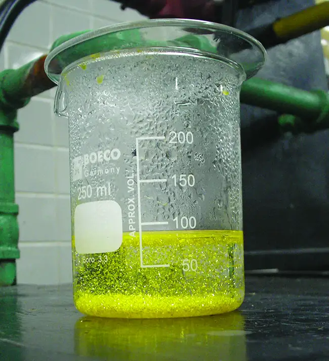
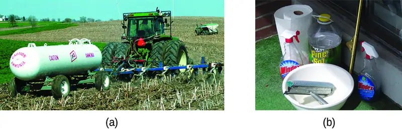
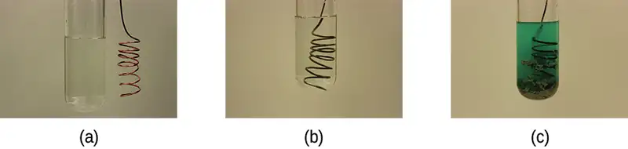
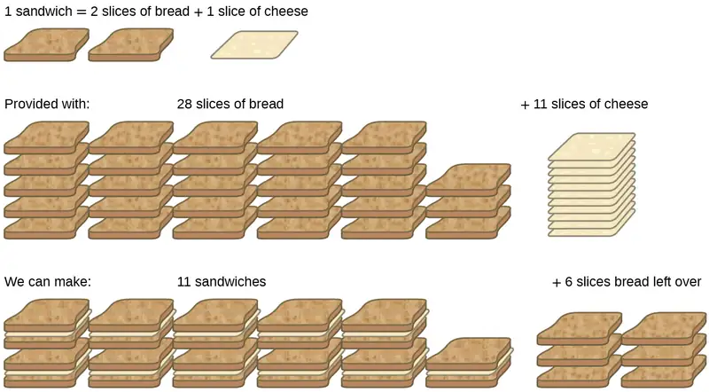
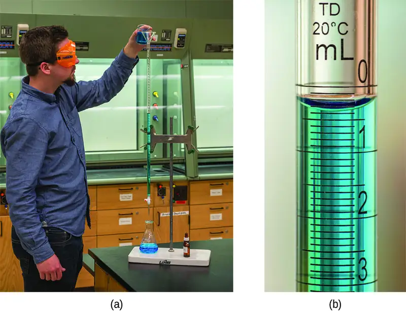
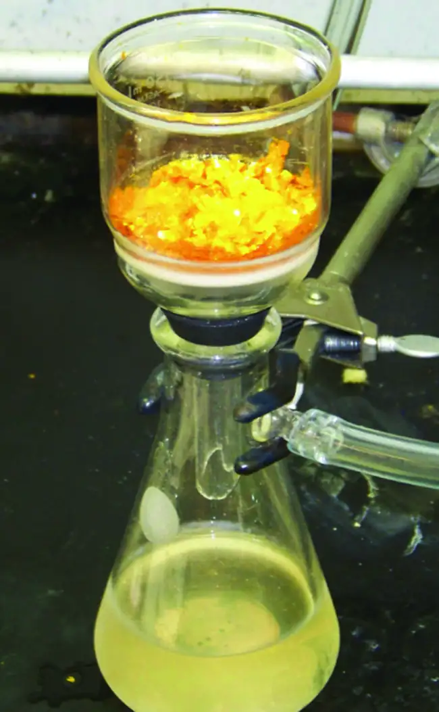

Chapter 4: Stoichiometry of Chemical Reactions¶
Introduction¶
Learning Objectives
- Writing and Balancing Chemical Equations
- Classifying Chemical Reactions
- Reaction Stoichiometry
- Reaction Yields
- Quantitative Chemical Analysis
Solid-fuel rockets are a central feature in the world’s space exploration programs, including the new Space Launch System being developed by the National Aeronautics and Space Administration (NASA) to replace the retired Space Shuttle fleet (Figure 4.1). The engines of these rockets rely on carefully prepared solid mixtures of chemicals combined in precisely measured amounts. Igniting the mixture initiates a vigorous chemical reaction that rapidly generates large amounts of gaseous products. These gases are ejected from the rocket engine through its nozzle, providing the thrust needed to propel heavy payloads into space. Both the nature of this chemical reaction and the relationships between the amounts of the substances being consumed and produced by the reaction are critically important considerations that determine the success of the technology. This chapter will describe how to symbolize chemical reactions using chemical equations, how to classify some common chemical reactions by identifying patterns of reactivity, and how to determine the quantitative relations between the amounts of substances involved in chemical reactions—that is, the reaction stoichiometry.
4.1 Writing and Balancing Chemical Equations¶
Learning Objectives
By the end of this section, you will be able to:
- Derive chemical equations from narrative descriptions of chemical reactions.
- Write and balance chemical equations in molecular, total ionic, and net ionic formats.
An earlier chapter of this text introduced the use of element symbols to represent individual atoms. When atoms gain or lose electrons to yield ions, or combine with other atoms to form molecules, their symbols are modified or combined to generate chemical formulas that appropriately represent these species. Extending this symbolism to represent both the identities and the relative quantities of substances undergoing a chemical (or physical) change involves writing and balancing a chemical equation. Consider as an example the reaction between one methane molecule (CH4) and two diatomic oxygen molecules (O2) to produce one carbon dioxide molecule (CO2) and two water molecules (H2O). The chemical equation representing this process is provided in the upper half of Figure 4.2, with space-filling molecular models shown in the lower half of the figure.
![This figure shows a balanced chemical equation followed below by a representation of the equation using space-filling models. The equation reads C H subscript 4 plus 2 O subscript 2 arrow C O subscript 2 plus 2 H subscript 2 O. Under the C H subscript 4, the molecule is shown with a central black sphere, representing a C atom, to which 4 smaller white spheres, representing H atoms, are distributed evenly around. All four H atoms are bonded to the central black C atom. This is followed by a plus sign. Under the 2 O subscript 2, two molecules are shown. The molecules are each composed of two red spheres bonded together. The red spheres represent O atoms. To the right of an arrow and under the C O subscript 2, appears a single molecule with a black central sphere with two red spheres bonded to the left and right. Following a plus sign and under the 2 H subscript 2 O, are two molecules, each with a central red sphere and two smaller white spheres attached to the lower right and lower left sides of the central red sphere. Note that in space filling models of molecules, spheres appear slightly compressed in regions where there is a bond between two atoms.](img/cnx-chem-04-01-rxn2.webp)
This example illustrates the fundamental aspects of any chemical equation:
- The substances undergoing reaction are called reactants, and their formulas are placed on the left side of the equation.
- The substances generated by the reaction are called products, and their formulas are placed on the right side of the equation.
- Plus signs (+) separate individual reactant and product formulas, and an arrow \(\text{(⟶)}\) separates the reactant and product (left and right) sides of the equation.
- The relative numbers of reactant and product species are represented by coefficients (numbers placed immediately to the left of each formula). A coefficient of 1 is typically omitted.
It is common practice to use the smallest possible whole-number coefficients in a chemical equation, as is done in this example. Realize, however, that these coefficients represent the relative numbers of reactants and products, and, therefore, they may be correctly interpreted as ratios. Methane and oxygen react to yield carbon dioxide and water in a 1:2:1:2 ratio. This ratio is satisfied if the numbers of these molecules are, respectively, 1-2-1-2, or 2-4-2-4, or 3-6-3-6, and so on (Figure 4.3). Likewise, these coefficients may be interpreted with regard to any amount (number) unit, and so this equation may be correctly read in many ways, including:
- One methane molecule and two oxygen molecules react to yield one carbon dioxide molecule and two water molecules.
- One dozen methane molecules and two dozen oxygen molecules react to yield one dozen carbon dioxide molecules and two dozen water molecules.
- One mole of methane molecules and 2 moles of oxygen molecules react to yield 1 mole of carbon dioxide molecules and 2 moles of water molecules.
![This image has a left side, labeled, “Mixture before reaction” separated by a vertical dashed line from right side labeled, “Mixture after reaction.” On the left side of the figure, two types of molecules are illustrated with space-filling models. Six of the molecules have only two red spheres bonded together. Three of the molecules have four small white spheres evenly distributed about and bonded to a central, larger black sphere. On the right side of the dashed vertical line, two types of molecules which are different from those on the left side are shown. Six of the molecules have a central red sphere to which smaller white spheres are bonded. The white spheres are not opposite each other on the red atoms, giving the molecule a bent shape or appearance. The second molecule type has a central black sphere to which two red spheres are attached on opposite sides, resulting in a linear shape or appearance. Note that in space filling models of molecules, spheres appear slightly compressed in regions where there is a bond between two atoms. On each side of the dashed line, twelve red, three black, and twelve white spheres are present.](img/cnx-chem-04-01-rxn3.webp)
Balancing Equations¶
The chemical equation described in section 4.1 is balanced, meaning that equal numbers of atoms for each element involved in the reaction are represented on the reactant and product sides. This is a requirement the equation must satisfy to be consistent with the law of conservation of matter. It may be confirmed by simply summing the numbers of atoms on either side of the arrow and comparing these sums to ensure they are equal. Note that the number of atoms for a given element is calculated by multiplying the coefficient of any formula containing that element by the element’s subscript in the formula. If an element appears in more than one formula on a given side of the equation, the number of atoms represented in each must be computed and then added together. For example, both product species in the example reaction, CO2 and H2O, contain the element oxygen, and so the number of oxygen atoms on the product side of the equation is
The equation for the reaction between methane and oxygen to yield carbon dioxide and water is confirmed to be balanced per this approach, as shown here:
| Element | Reactants | Products | Balanced? |
|---|---|---|---|
| C | 1 \(\times\) 1 = 1 | 1 \(\times\) 1 = 1 | 1 = 1, yes |
| H | 4 \(\times\) 1 = 4 | 2 \(\times\) 2 = 4 | 4 = 4, yes |
| O | 2 \(\times\) 2 = 4 | (1 \(\times\) 2) + (2 \(\times\) 1) = 4 | 4 = 4, yes |
A balanced chemical equation often may be derived from a qualitative description of some chemical reaction by a fairly simple approach known as balancing by inspection. Consider as an example the decomposition of water to yield molecular hydrogen and oxygen. This process is represented qualitatively by an unbalanced chemical equation:
Comparing the number of H and O atoms on either side of this equation confirms its imbalance:
| Element | Reactants | Products | Balanced? |
|---|---|---|---|
| H | 1 \(\times\) 2 = 2 | 1 \(\times\) 2 = 2 | 2 = 2, yes |
| O | 1 \(\times\) 1 = 1 | 1 \(\times\) 2 = 2 | 1 ≠ 2, no |
The numbers of H atoms on the reactant and product sides of the equation are equal, but the numbers of O atoms are not. To achieve balance, the coefficients of the equation may be changed as needed. Keep in mind, of course, that the formula subscripts define, in part, the identity of the substance, and so these cannot be changed without altering the qualitative meaning of the equation. For example, changing the reactant formula from H2O to H2O2 would yield balance in the number of atoms, but doing so also changes the reactant’s identity (it’s now hydrogen peroxide and not water). The O atom balance may be achieved by changing the coefficient for H2O to 2.
| Element | Reactants | Products | Balanced? |
|---|---|---|---|
| H | 2\(\times\) 2 = 4 | 1 \(\times\) 2 = 2 | 4 ≠ 2, no |
| O | 2 \(\times\) 1 = 2 | 1 \(\times\) 2 = 2 | 2 = 2, yes |
The H atom balance was upset by this change, but it is easily reestablished by changing the coefficient for the H2 product to 2.
| Element | Reactants | Products | Balanced? |
|---|---|---|---|
| H | 2 \(\times\) 2 = 4 | 2\(\times\) 2 = 4 | 4 = 4, yes |
| O | 2 \(\times\) 1 = 2 | 1 \(\times\) 2 = 2 | 2 = 2, yes |
These coefficients yield equal numbers of both H and O atoms on the reactant and product sides, and the balanced equation is, therefore:
Example 4.1 Balancing Chemical Equations
Write a balanced equation for the reaction of molecular nitrogen (N2) and oxygen (O2) to form dinitrogen pentoxide.
Solution
First, write the unbalanced equation.
Next, count the number of each type of atom present in the unbalanced equation.
| Element | Reactants | Products | Balanced? |
|---|---|---|---|
| N | 1 \(\times\) 2 = 2 | 1 \(\times\) 2 = 2 | 2 = 2, yes |
| O | 1 \(\times\) 2 = 2 | 1 \(\times\) 5 = 5 | 2 ≠ 5, no |
Though nitrogen is balanced, changes in coefficients are needed to balance the number of oxygen atoms. To balance the number of oxygen atoms, a reasonable first attempt would be to change the coefficients for the O2 and N2O5 to integers that will yield 10 O atoms (the least common multiple for the O atom subscripts in these two formulas).
| Element | Reactants | Products | Balanced? |
|---|---|---|---|
| N | 1 \(\times\) 2 = 2 | 2\(\times\) 2 = 4 | 2 ≠ 4, no |
| O | 5\(\times\) 2 = 10 | 2\(\times\) 5 = 10 | 10 = 10, yes |
The N atom balance has been upset by this change; it is restored by changing the coefficient for the reactant N2 to 2.
| Element | Reactants | Products | Balanced? |
|---|---|---|---|
| N | 2\(\times\) 2 = 4 | 2 \(\times\) 2 = 4 | 4 = 4, yes |
| O | 5 \(\times\) 2 = 10 | 2 \(\times\) 5 = 10 | 10 = 10, yes |
The numbers of N and O atoms on either side of the equation are now equal, and so the equation is balanced.
Check Your Learning
Write a balanced equation for the decomposition of ammonium nitrate to form molecular nitrogen, molecular oxygen, and water. (Hint: Balance oxygen last, since it is present in more than one molecule on the right side of the equation.)
Answer:
\(2\text{NH}_{4}\text{NO}_{3}\:\longrightarrow\:2\text{N}_{2}+\text{O}_{2}+4\text{H}_{2}\text{O}\)
It is sometimes convenient to use fractions instead of integers as intermediate coefficients in the process of balancing a chemical equation. When balance is achieved, all the equation’s coefficients may then be multiplied by a whole number to convert the fractional coefficients to integers without upsetting the atom balance. For example, consider the reaction of ethane (C2H6) with oxygen to yield H2O and CO2, represented by the unbalanced equation:
Following the usual inspection approach, one might first balance C and H atoms by changing the coefficients for the two product species, as shown:
This results in seven O atoms on the product side of the equation, an odd number—no integer coefficient can be used with the O2 reactant to yield an odd number, so a fractional coefficient, \(\frac{7}{2},\) is used instead to yield a provisional balanced equation:
A conventional balanced equation with integer-only coefficients is derived by multiplying each coefficient by 2:
Finally with regard to balanced equations, recall that convention dictates use of the smallest whole-number coefficients. Although the equation for the reaction between molecular nitrogen and molecular hydrogen to produce ammonia is, indeed, balanced,
the coefficients are not the smallest possible integers representing the relative numbers of reactant and product molecules. Dividing each coefficient by the greatest common factor, 3, gives the preferred equation:
Link to Learning
Use this interactive tutorial for additional practice balancing equations.
Additional Information in Chemical Equations¶
The physical states of reactants and products in chemical equations very often are indicated with a parenthetical abbreviation following the formulas. Common abbreviations include s for solids, l for liquids, g for gases, and aq for substances dissolved in water (aqueous solutions, as introduced in the preceding chapter). These notations are illustrated in the example equation here:
This equation represents the reaction that takes place when sodium metal is placed in water. The solid sodium reacts with liquid water to produce molecular hydrogen gas and the ionic compound sodium hydroxide (a solid in pure form, but readily dissolved in water).
Special conditions necessary for a reaction are sometimes designated by writing a word or symbol above or below the equation’s arrow. For example, a reaction carried out by heating may be indicated by the uppercase Greek letter delta (Δ) over the arrow.
Other examples of these special conditions will be encountered in more depth in later chapters.
Equations for Ionic Reactions¶
Given the abundance of water on earth, it stands to reason that a great many chemical reactions take place in aqueous media. When ions are involved in these reactions, the chemical equations may be written with various levels of detail appropriate to their intended use. To illustrate this, consider a reaction between ionic compounds taking place in an aqueous solution. When aqueous solutions of CaCl2 and AgNO3 are mixed, a reaction takes place producing aqueous Ca(NO3)2 and solid AgCl:
This balanced equation, derived in the usual fashion, is called a molecular equation because it doesn’t explicitly represent the ionic species that are present in solution. When ionic compounds dissolve in water, they may dissociate into their constituent ions, which are subsequently dispersed homogenously throughout the resulting solution (a thorough discussion of this important process is provided in the chapter on solutions). Ionic compounds dissolved in water are, therefore, more realistically represented as dissociated ions, in this case:
Unlike these three ionic compounds, AgCl does not dissolve in water to a significant extent, as signified by its physical state notation, s.
Explicitly representing all dissolved ions results in a complete ionic equation. In this particular case, the formulas for the dissolved ionic compounds are replaced by formulas for their dissociated ions:
Examining this equation shows that two chemical species are present in identical form on both sides of the arrow, Ca2+(aq) and \(\text{NO}_{3}{}^{-}(aq).\) These spectator ions—ions whose presence is required to maintain charge neutrality—are neither chemically nor physically changed by the process, and so they may be eliminated from the equation to yield a more succinct representation called a net ionic equation:
Following the convention of using the smallest possible integers as coefficients, this equation is then written:
This net ionic equation indicates that solid silver chloride may be produced from dissolved chloride and silver(I) ions, regardless of the source of these ions. These molecular and complete ionic equations provide additional information, namely, the ionic compounds used as sources of Cl− and Ag+.
Example 4.2 Ionic and Molecular Equations
When carbon dioxide is dissolved in an aqueous solution of sodium hydroxide, the mixture reacts to yield aqueous sodium carbonate and liquid water. Write balanced molecular, complete ionic, and net ionic equations for this process.
Solution
Begin by identifying formulas for the reactants and products and arranging them properly in chemical equation form:
Balance is achieved easily in this case by changing the coefficient for NaOH to 2, resulting in the molecular equation for this reaction:
The two dissolved ionic compounds, NaOH and Na2CO3, can be represented as dissociated ions to yield the complete ionic equation:
Finally, identify the spectator ion(s), in this case Na+(aq), and remove it from each side of the equation to generate the net ionic equation:
Check Your Learning
Diatomic chlorine and sodium hydroxide (lye) are commodity chemicals produced in large quantities, along with diatomic hydrogen, via the electrolysis of brine, according to the following unbalanced equation:
Write balanced molecular, complete ionic, and net ionic equations for this process.
Answer:
\(2\text{NaCl}(aq)+2\text{H}_{2}\text{O}(l)\:\longrightarrow\:2\text{NaOH}(aq)+\text{H}_{2}(g)+\text{Cl}_{2}(g)\hspace{3.0em}(\text{molecular})\)
\(2\text{Na}^{\text{+}}(aq)+2\text{Cl}^{-}(aq)+2\text{H}_{2}\text{O}(l)\:\longrightarrow\:2\text{Na}^{\text{+}}(aq)+2\text{OH}^{-}(aq)+\text{H}_{2}(g)+\text{Cl}_{2}(g)\hspace{3.0em}(\text{complete ionic})\)
\(2\text{Cl}^{-}(aq)+2\text{H}_{2}\text{O}(l)\:\longrightarrow\:2\text{OH}^{-}(aq)+\text{H}_{2}(g)+\text{Cl}_{2}(g)\hspace{3.0em}\text{(net ionic)}\)
4.2 Classifying Chemical Reactions¶
Learning Objectives
By the end of this section, you will be able to:
- Define three common types of chemical reactions (precipitation, acid-base, and oxidation-reduction)
- Classify chemical reactions as one of these three types given appropriate descriptions or chemical equations
- Identify common acids and bases
- Predict the solubility of common inorganic compounds by using solubility rules
- Compute the oxidation states for elements in compounds
Humans interact with one another in various and complex ways, and we classify these interactions according to common patterns of behavior. When two humans exchange information, we say they are communicating. When they exchange blows with their fists or feet, we say they are fighting. Faced with a wide range of varied interactions between chemical substances, scientists have likewise found it convenient (or even necessary) to classify chemical interactions by identifying common patterns of reactivity. This module will provide an introduction to three of the most prevalent types of chemical reactions: precipitation, acid-base, and oxidation-reduction.
Precipitation Reactions and Solubility Rules¶
A precipitation reaction is one in which dissolved substances react to form one (or more) solid products. Many reactions of this type involve the exchange of ions between ionic compounds in aqueous solution and are sometimes referred to as double displacement, double replacement, or metathesis reactions. These reactions are common in nature and are responsible for the formation of coral reefs in ocean waters and kidney stones in animals. They are used widely in industry for production of a number of commodity and specialty chemicals. Precipitation reactions also play a central role in many chemical analysis techniques, including spot tests used to identify metal ions and gravimetric methods for determining the composition of matter (see the last module of this chapter).
The extent to which a substance may be dissolved in water, or any solvent, is quantitatively expressed as its solubility, defined as the maximum concentration of a substance that can be achieved under specified conditions. Substances with relatively large solubilities are said to be soluble. A substance will precipitate when solution conditions are such that its concentration exceeds its solubility. Substances with relatively low solubilities are said to be insoluble, and these are the substances that readily precipitate from solution. More information on these important concepts is provided in a later chapter on solutions. For purposes of predicting the identities of solids formed by precipitation reactions, one may simply refer to patterns of solubility that have been observed for many ionic compounds (Table 4.1).
Table 4.1
| Soluble Ionic Compounds | contain these ions | exceptions |
| NH4+ group I cations: Li+ Na+ K+ Rb+ Cs+ |
none | |
| Cl- Br- I- |
compounds with Ag+, Hg22+, and Pb2+ | |
| F- | compounds with group 2 metal cations, Pb2+, and Fe3+ | |
| C2H3O2- HCO3- NO3- ClO3- |
none | |
| SO42- | compounds with Ag+, Ba2+, Ca2+, Hg22+, Pb2+ and Sr2+ | |
| Insoluble Ionic Compounds | contain these ions | exceptions |
| CO32- CrO42- PO43- S2- |
compounds with group 1 cations and NH4+ | |
| OH- | compounds with group 1 cations and Ba2+ |
A vivid example of precipitation is observed when solutions of potassium iodide and lead nitrate are mixed, resulting in the formation of solid lead iodide:
This observation is consistent with the solubility guidelines: The only insoluble compound among all those involved is lead iodide, one of the exceptions to the general solubility of iodide salts.
The net ionic equation representing this reaction is:
Lead iodide is a bright yellow solid that was formerly used as an artist’s pigment known as iodine yellow (Figure 4.4). The properties of pure PbI2 crystals make them useful for fabrication of X-ray and gamma ray detectors.

The solubility guidelines in Table 4.1 may be used to predict whether a precipitation reaction will occur when solutions of soluble ionic compounds are mixed together. One merely needs to identify all the ions present in the solution and then consider if possible cation/anion pairing could result in an insoluble compound. For example, mixing solutions of silver nitrate and sodium chloride will yield a solution containing Ag+, \(\text{NO}_{3}{}^{-},\) Na+, and Cl− ions. Aside from the two ionic compounds originally present in the solutions, AgNO3 and NaCl, two additional ionic compounds may be derived from this collection of ions: NaNO3 and AgCl. The solubility guidelines indicate all nitrate salts are soluble but that AgCl is one of insoluble. A precipitation reaction, therefore, is predicted to occur, as described by the following equations:
Example 4.3 Predicting Precipitation Reactions
Predict the result of mixing reasonably concentrated solutions of the following ionic compounds. If precipitation is expected, write a balanced net ionic equation for the reaction.
(a) potassium sulfate and barium nitrate
(b) lithium chloride and silver acetate
(c) lead (II) nitrate and ammonium carbonate
Solution
(a) The two possible products for this combination are KNO3 and BaSO4. The solubility guidelines indicate BaSO4 is insoluble, and so a precipitation reaction is expected. The net ionic equation for this reaction, derived in the manner detailed in the previous module, is
(b) The two possible products for this combination are LiC2H3O2 and AgCl. The solubility guidelines indicate AgCl is insoluble, and so a precipitation reaction is expected. The net ionic equation for this reaction, derived in the manner detailed in the previous module, is
(c) The two possible products for this combination are PbCO3 and NH4NO3. The solubility guidelines indicate PbCO3 is insoluble, and so a precipitation reaction is expected. The net ionic equation for this reaction, derived in the manner detailed in the previous module, is
Check Your Learning
Which solution could be used to precipitate the barium ion, Ba2+, in a water sample: sodium chloride, sodium hydroxide, or sodium sulfate? What is the formula for the expected precipitate?
Answer:
sodium sulfate, BaSO4
Acid-Base Reactions¶
An acid-base reaction is one in which a hydrogen ion, H+, is transferred from one chemical species to another. Such reactions are of central importance to numerous natural and technological processes, ranging from the chemical transformations that take place within cells and the lakes and oceans, to the industrial-scale production of fertilizers, pharmaceuticals, and other substances essential to society. The subject of acid-base chemistry, therefore, is worthy of thorough discussion, and a full chapter is devoted to this topic later in the text.
For purposes of this brief introduction, we will consider only the more common types of acid-base reactions that take place in aqueous solutions. In this context, an acid is a substance that will dissolve in water to yield hydronium ions, H3O+. As an example, consider the equation shown here:
The process represented by this equation confirms that hydrogen chloride is an acid. When dissolved in water, H3O+ ions are produced by a chemical reaction in which H+ ions are transferred from HCl molecules to H2O molecules (Figure 4.5).
![This figure shows two flasks, labeled a and b. The flasks are both sealed with stoppers and are nearly three-quarters full of a liquid. Flask a is labeled H C l followed by g in parentheses. In the liquid there are approximately twenty space-filling molecular models composed of one red sphere and two smaller attached white spheres. The label H subscript 2 O followed by a q in parentheses is connected with a line to one of these models. In the space above the liquid in the flask, four space filling molecular models composed of one larger green sphere to which a smaller white sphere is bonded are shown. To one of these models, the label H C l followed by g in parentheses is attached with a line segment. An arrow is drawn from the space above the liquid pointing down into the liquid below. Flask b is labeled H subscript 3 O superscript positive sign followed by a q in parentheses. This is followed by a plus sign and C l superscript negative sign which is also followed by a q in parentheses. In this flask, no molecules are shown in the open space above the liquid. A label, C l superscript negative sign followed by a q in parentheses, is connected with a line segment to a green sphere. This sphere is surrounded by four molecules composed each of one red sphere and two white smaller spheres. A few of these same molecules appear separate from the green spheres in the liquid. A line segment connects one of them to the label H subscript 2 O which is followed by l in parentheses. There are a few molecules formed from one central larger red sphere to which three smaller white spheres are bonded. A line segment is drawn from one of these to the label H subscript 3 O superscript positive sign, followed by a q in parentheses.](img/cnx-chem-04-02-hclsoln.webp)
The nature of HCl is such that its reaction with water as just described is essentially 100% efficient: Virtually every HCl molecule that dissolves in water will undergo this reaction. Acids that completely react in this fashion are called strong acids, and HCl is one among just a handful of common acid compounds that are classified as strong (Table 4.2). A far greater number of compounds behave as weak acids and only partially react with water, leaving a large majority of dissolved molecules in their original form and generating a relatively small amount of hydronium ions. Weak acids are commonly encountered in nature, being the substances partly responsible for the tangy taste of citrus fruits, the stinging sensation of insect bites, and the unpleasant smells associated with body odor. A familiar example of a weak acid is acetic acid, the main ingredient in food vinegars:
When dissolved in water under typical conditions, only about 1% of acetic acid molecules are present in the ionized form, \(\text{CH}_{3}\text{CO}_{2}{}^{-}\) (Figure 4.6). (The use of a double-arrow in the equation above denotes the partial reaction aspect of this process, a concept addressed fully in the chapters on chemical equilibrium.)
![This figure contains two images, each with an associated structural formula provided in the lower left corner of the image. The first image is a photograph of a variety of thinly sliced, circular cross sections of citrus fruits ranging in color for green to yellow, to orange and reddish-orange. The slices are closely packed on a white background. The structural formula with this picture shows a central chain of five C atoms. The leftmost C atom has an O atom double bonded above and to the left and a singly bonded O atom below and to the left. This single bonded O atom has an H atom indicated in red on its left side which is highlighted in pink. The second C atom moving to the right has H atoms bonded above and below. The third C atom has a single bonded O atom above which has an H atom on its right. This third C atom has a C atom bonded below it which has an O atom double bonded below and to the left and a singly bonded O atom below and to the right. An H atom appears in red and is highlighted in pink to the right of the singly bonded O atom. The fourth C atom has H atoms bonded above and below. The fifth C atom is at the right end of the structure. It has an O atom double bonded above and to the right and a singly bonded O atom below and to the right. This single bonded O atom has a red H atom on its right side which is highlighted in pink. The second image is a photograph of bottles of vinegar. The bottles are labeled, “Balsamic Vinegar,” and appear to be clear and colorless. The liquid in this bottle appears to be brown. The structural formula that appears with this image shows a chain of two C atoms. The leftmost C atom has H atoms bonded above, below, and to the left. The C atom on the right has a doubly bonded O atom above and to the right and a singly bonded O atom below and to the right. This O atom has an H atom bonded to its right which is highlighted in pink.](img/cnx-chem-04-02-citrus.webp)
Table 4.2
| Common Strong Acids | ||
|---|---|---|
| Compound Formula | Name in Aqueous Solution | |
| HBr | hydrobromic acid | |
| HCl | hydrochloric acid | |
| HI | hydroiodic acid | |
| HNO3 | nitric acid | |
| HClO4 | perchloric acid | |
| H2SO4 | sulfuric acid | |
A base is a substance that will dissolve in water to yield hydroxide ions, OH−. The most common bases are ionic compounds composed of alkali or alkaline earth metal cations (groups 1 and 2) combined with the hydroxide ion—for example, NaOH and Ca(OH)2. Unlike the acid compounds discussed previously, these compounds do not react chemically with water; instead they dissolve and dissociate, releasing hydroxide ions directly into the solution. For example, KOH and Ba(OH)2 dissolve in water and dissociate completely to produce cations (K+ and Ba2+, respectively) and hydroxide ions, OH−. These bases, along with other hydroxides that completely dissociate in water, are considered strong bases.
Consider as an example the dissolution of lye (sodium hydroxide) in water:
This equation confirms that sodium hydroxide is a base. When dissolved in water, NaOH dissociates to yield Na+ and OH− ions. This is also true for any other ionic compound containing hydroxide ions. Since the dissociation process is essentially complete when ionic compounds dissolve in water under typical conditions, NaOH and other ionic hydroxides are all classified as strong bases.
Unlike ionic hydroxides, some compounds produce hydroxide ions when dissolved by chemically reacting with water molecules. In all cases, these compounds react only partially and so are classified as weak bases. These types of compounds are also abundant in nature and important commodities in various technologies. For example, global production of the weak base ammonia is typically well over 100 million metric tons annually, being widely used as an agricultural fertilizer, a raw material for chemical synthesis of other compounds, and an active ingredient in household cleaners (Figure 4.7). When dissolved in water, ammonia reacts partially to yield hydroxide ions, as shown here:
This is, by definition, an acid-base reaction, in this case involving the transfer of H+ ions from water molecules to ammonia molecules. Under typical conditions, only about 1% of the dissolved ammonia is present as \(\text{NH}_{4}{}^{+}\) ions.

A neutralization reaction is a specific type of acid-base reaction in which the reactants are an acid and a base (but not water), and the products are often a salt and water
To illustrate a neutralization reaction, consider what happens when a typical antacid such as milk of magnesia (an aqueous suspension of solid Mg(OH)2) is ingested to ease symptoms associated with excess stomach acid (HCl):
Note that in addition to water, this reaction produces a salt, magnesium chloride.
Example 4.4 Writing Equations for Acid-Base Reactions
Write balanced chemical equations for the acid-base reactions described here:
(a) the weak acid hydrogen hypochlorite reacts with water
(b) a solution of barium hydroxide is neutralized with a solution of nitric acid
Solution
(a) The two reactants are provided, HOCl and H2O. Since the substance is reported to be an acid, its reaction with water will involve the transfer of H+ from HOCl to H2O to generate hydronium ions, H3O+ and hypochlorite ions, OCl−.
A double-arrow is appropriate in this equation because it indicates the HOCl is a weak acid that has not reacted completely.
(b) The two reactants are provided, Ba(OH)2 and HNO3. Since this is a neutralization reaction, the two products will be water and a salt composed of the cation of the ionic hydroxide (Ba2+) and the anion generated when the acid transfers its hydrogen ion \((\text{NO}_{3}{}^{-}).\)
Check Your Learning
Write the net ionic equation representing the neutralization of any strong acid with an ionic hydroxide. (Hint: Consider the ions produced when a strong acid is dissolved in water.)
Answer:
\(\text{H}_{3}\text{O}^{\text{+}}(aq)+\text{OH}^{-}(aq)\:\longrightarrow\:2\text{H}_{2}\text{O}(l)\)
Chemistry in Everyday Life: Stomach Antacids
Our stomachs contain a solution of roughly 0.03 M HCl, which helps us digest the food we eat. The burning sensation associated with heartburn is a result of the acid of the stomach leaking through the muscular valve at the top of the stomach into the lower reaches of the esophagus. The lining of the esophagus is not protected from the corrosive effects of stomach acid the way the lining of the stomach is, and the results can be very painful. When we have heartburn, it feels better if we reduce the excess acid in the esophagus by taking an antacid. As you may have guessed, antacids are bases. One of the most common antacids is calcium carbonate, CaCO3. The reaction,
not only neutralizes stomach acid, it also produces CO2(g), which may result in a satisfying belch.
Milk of Magnesia is a suspension of the sparingly soluble base magnesium hydroxide, Mg(OH)2. It works according to the reaction:
The hydroxide ions generated in this equilibrium then go on to react with the hydronium ions from the stomach acid, so that:
This reaction does not produce carbon dioxide, but magnesium-containing antacids can have a laxative effect. Several antacids have aluminum hydroxide, Al(OH)3, as an active ingredient. The aluminum hydroxide tends to cause constipation, and some antacids use aluminum hydroxide in concert with magnesium hydroxide to balance the side effects of the two substances.
Chemistry in Everyday Life: Culinary Aspects of Chemistry
Examples of acid-base chemistry are abundant in the culinary world. One example is the use of baking soda, or sodium bicarbonate in baking. NaHCO3 is a base. When it reacts with an acid such as lemon juice, buttermilk, or sour cream in a batter, bubbles of carbon dioxide gas are formed from decomposition of the resulting carbonic acid, and the batter “rises.” Baking powder is a combination of sodium bicarbonate, and one or more acid salts that react when the two chemicals come in contact with water in the batter.
Many people like to put lemon juice or vinegar, both of which are acids, on cooked fish (Figure 4.8). It turns out that fish have volatile amines (bases) in their systems, which are neutralized by the acids to yield involatile ammonium salts. This reduces the odor of the fish, and also adds a “sour” taste that we seem to enjoy.
![An image is shown of two fish with heads removed and skin on with lemon slices placed in the body cavity. The first line of an equation below the image reads C H subscript 3 C O O H plus N H subscript 2 C H subscript 2 C H subscript 2 C H subscript 2 C H subscript 2 N H subscript 2 arrow C H subscript 3 C O O superscript negative sign plus N H subscript 3 superscript positive sign C H subscript 2 C H subscript 2 C H subscript 2 C H subscript 2 N H subscript 2. The second line of the equation reads Acetic acid plus sign Putrescine arrow Acetate ion plus sign Putrescinium ion.](img/cnx-chem-14-03-fishlemon.webp)
Pickling is a method used to preserve vegetables using a naturally produced acidic environment. The vegetable, such as a cucumber, is placed in a sealed jar submerged in a brine solution. The brine solution favors the growth of beneficial bacteria and suppresses the growth of harmful bacteria. The beneficial bacteria feed on starches in the cucumber and produce lactic acid as a waste product in a process called fermentation. The lactic acid eventually increases the acidity of the brine to a level that kills any harmful bacteria, which require a basic environment. Without the harmful bacteria consuming the cucumbers they are able to last much longer than if they were unprotected. A byproduct of the pickling process changes the flavor of the vegetables with the acid making them taste sour.
Link to Learning
Explore the microscopic view of strong and weak acids and bases.
Oxidation-Reduction Reactions¶
Earth’s atmosphere contains about 20% molecular oxygen, O2, a chemically reactive gas that plays an essential role in the metabolism of aerobic organisms and in many environmental processes that shape the world. The term oxidation was originally used to describe chemical reactions involving O2, but its meaning has evolved to refer to a broad and important reaction class known as oxidation-reduction (redox) reactions. A few examples of such reactions will be used to develop a clear picture of this classification.
Some redox reactions involve the transfer of electrons between reactant entities to yield ionic products, such as the reaction between sodium and chlorine to yield sodium chloride:
It is helpful to view the process with regard to each individual reactant, that is, to represent the fate of each reactant in the form of an equation called a half-reaction:
These equations show that Na atoms lose electrons while Cl atoms (in the Cl2 molecule) gain electrons, the “s” subscripts for the resulting ions signifying they are present in the form of a solid ionic compound. For redox reactions of this sort, the loss and gain of electrons define the complementary processes that occur:
In this reaction, then, sodium is oxidized and chlorine undergoes reduction. Viewed from a more active perspective, sodium functions as a reducing agent (reductant), since it provides electrons to (or reduces) chlorine. Likewise, chlorine functions as an oxidizing agent (oxidant), as it effectively removes electrons from (oxidizes) sodium.
Some redox processes, however, do not involve the transfer of electrons. Consider, for example, a reaction similar to the one yielding NaCl:
The product of this reaction is a covalent compound, so transfer of electrons in the explicit sense is not involved. To clarify the similarity of this reaction to the previous one and permit an unambiguous definition of redox reactions, a property called oxidation number has been defined. The oxidation number (or oxidation state) of an element in a compound is the charge its atoms would possess if the compound were ionic. The following guidelines are used to assign oxidation numbers to each element in a molecule or ion.
-
The oxidation number of an atom in an elemental substance is zero.
-
The oxidation number of a monatomic ion is equal to the ion’s charge.
-
Oxidation numbers for common nonmetals are usually assigned as follows:
- Hydrogen: +1 when combined with nonmetals, −1 when combined with metals
- Oxygen: −2 in most compounds, sometimes −1 (so-called peroxides, \(\text{O}_{2}{}^{\text{2−}}),\) very rarely \(-\:\frac{1}{2}\) (so-called superoxides, \(\text{O}_{2}{}^{-}),\) positive values when combined with F (values vary)
- Halogens: −1 for F always, −1 for other halogens except when combined with oxygen or other halogens (positive oxidation numbers in these cases, varying values)
-
The sum of oxidation numbers for all atoms in a molecule or polyatomic ion equals the charge on the molecule or ion.
Note: The proper convention for reporting charge is to write the number first, followed by the sign (e.g., 2+), while oxidation number is written with the reversed sequence, sign followed by number (e.g., +2). This convention aims to emphasize the distinction between these two related properties.
Example 4.5 Assigning Oxidation Numbers
Follow the guidelines in this section of the text to assign oxidation numbers to all the elements in the following species:
(a) H2S
(b) \(\text{SO}_{3}{}^{\text{2−}}\)
(c) Na2SO4
Solution
(a) According to guideline 3, the oxidation number for H is +1.
Using this oxidation number and the compound’s formula, guideline 4 may then be used to calculate the oxidation number for sulfur:
(b) Guideline 3 suggests the oxidation number for oxygen is −2.
Using this oxidation number and the ion’s formula, guideline 4 may then be used to calculate the oxidation number for sulfur:
(c) For ionic compounds, it’s convenient to assign oxidation numbers for the cation and anion separately.
According to guideline 2, the oxidation number for sodium is +1.
Assuming the usual oxidation number for oxygen (−2 per guideline 3), the oxidation number for sulfur is calculated as directed by guideline 4:
Check Your Learning
Assign oxidation states to the elements whose atoms are underlined in each of the following compounds or ions:
(a) KNO3
(b) AlH3
(c) \(\underline{\text{N}}\text{H}_{4}{}^{+}\)
(d) \(\text{H}_{2}\underline{\text{P}}\text{O}_{4}{}^{-}\)
Answer:
(a) N, +5; (b) Al, +3; (c) N, −3; (d) P, +5
Using the oxidation number concept, an all-inclusive definition of redox reaction has been established. Oxidation-reduction (redox) reactions are those in which one or more elements involved undergo a change in oxidation number. (While the vast majority of redox reactions involve changes in oxidation number for two or more elements, a few interesting exceptions to this rule do exist Example 4.6.) Definitions for the complementary processes of this reaction class are correspondingly revised as shown here:
Returning to the reactions used to introduce this topic, they may now both be identified as redox processes. In the reaction between sodium and chlorine to yield sodium chloride, sodium is oxidized (its oxidation number increases from 0 in Na to +1 in NaCl) and chlorine is reduced (its oxidation number decreases from 0 in Cl2 to −1 in NaCl). In the reaction between molecular hydrogen and chlorine, hydrogen is oxidized (its oxidation number increases from 0 in H2 to +1 in HCl) and chlorine is reduced (its oxidation number decreases from 0 in Cl2 to −1 in HCl).
Several subclasses of redox reactions are recognized, including combustion reactions in which the reductant (also called a fuel) and oxidant (often, but not necessarily, molecular oxygen) react vigorously and produce significant amounts of heat, and often light, in the form of a flame. Solid rocket-fuel reactions such as the one depicted in Figure 4.1 are combustion processes. A typical propellant reaction in which solid aluminum is oxidized by ammonium perchlorate is represented by this equation:
Link to Learning
Watch a brief video showing the test firing of a small-scale, prototype, hybrid rocket engine planned for use in the new Space Launch System being developed by NASA. The first engines firing at 3 s (green flame) use a liquid fuel/oxidant mixture, and the second, more powerful engines firing at 4 s (yellow flame) use a solid mixture.
Single-displacement (replacement) reactions are redox reactions in which an ion in solution is displaced (or replaced) via the oxidation of a metallic element. One common example of this type of reaction is the acid oxidation of certain metals:
Metallic elements may also be oxidized by solutions of other metal salts; for example:
This reaction may be observed by placing copper wire in a solution containing a dissolved silver salt. Silver ions in solution are reduced to elemental silver at the surface of the copper wire, and the resulting Cu2+ ions dissolve in the solution to yield a characteristic blue color (Figure 4.9).

Example 4.6 Describing Redox Reactions
Identify which equations represent redox reactions, providing a name for the reaction if appropriate. For those reactions identified as redox, name the oxidant and reductant.
(a) \(\text{ZnCO}_{3}(s)\:\longrightarrow\:\text{ZnO}(s)+\text{CO}_{2}(g)\)
(b) \(2\text{Ga}(l)+3\text{Br}_{2}(l)\:\longrightarrow\:2\text{GaBr}_{3}(s)\)
(c) \(2\text{H}_{2}\text{O}_{2}(aq)\:\longrightarrow\:2\text{H}_{2}\text{O}(l)+\text{O}_{2}(g)\)
(d) \(\text{BaCl}_{2}(aq)+\text{K}_{2}\text{SO}_{4}(aq)\:\longrightarrow\:\text{BaSO}_{4}(s)+2\text{KCl}(aq)\)
(e) \(\text{C}_{2}\text{H}_{4}(g)+3\text{O}_{2}(g)\:\longrightarrow\:2\text{CO}_{2}(g)+2\text{H}_{2}\text{O}(l)\)
Solution
Redox reactions are identified per definition if one or more elements undergo a change in oxidation number.
(a) This is not a redox reaction, since oxidation numbers remain unchanged for all elements.
(b) This is a redox reaction. Gallium is oxidized, its oxidation number increasing from 0 in Ga(l) to +3 in GaBr3(s). The reducing agent is Ga(l). Bromine is reduced, its oxidation number decreasing from 0 in Br2(l) to −1 in GaBr3(s). The oxidizing agent is Br2(l).
(c) This is a redox reaction. It is a particularly interesting process, as it involves the same element, oxygen, undergoing both oxidation and reduction (a so-called disproportionation reaction). Oxygen is oxidized, its oxidation number increasing from −1 in H2O2(aq) to 0 in O2(g). Oxygen is also reduced, its oxidation number decreasing from −1 in H2O2(aq) to −2 in H2O(l). For disproportionation reactions, the same substance functions as an oxidant and a reductant.
(d) This is not a redox reaction, since oxidation numbers remain unchanged for all elements.
(e) This is a redox reaction (combustion). Carbon is oxidized, its oxidation number increasing from −2 in C2H4(g) to +4 in CO2(g). The reducing agent (fuel) is C2H4(g). Oxygen is reduced, its oxidation number decreasing from 0 in O2(g) to −2 in H2O(l). The oxidizing agent is O2(g).
Check Your Learning
This equation describes the production of tin(II) chloride:
Is this a redox reaction? If so, provide a more specific name for the reaction if appropriate, and identify the oxidant and reductant.
Answer:
Yes, a single-replacement reaction. Sn(s)is the reductant, HCl(g) is the oxidant.
Balancing Redox Reactions via the Half-Reaction Method¶
Redox reactions that take place in aqueous media often involve water, hydronium ions, and hydroxide ions as reactants or products. Although these species are not oxidized or reduced, they do participate in chemical change in other ways (e.g., by providing the elements required to form oxyanions). Equations representing these reactions are sometimes very difficult to balance by inspection, so systematic approaches have been developed to assist in the process. One very useful approach is to use the method of half-reactions, which involves the following steps:
1. Write the two half-reactions representing the redox process.
2. Balance all elements except oxygen and hydrogen.
3. Balance oxygen atoms by adding H2O molecules.
4. Balance hydrogen atoms by adding H+ ions.
5. Balance charge by adding electrons.
6. If necessary, multiply each half-reaction’s coefficients by the smallest possible integers to yield equal numbers of electrons in each.
7. Add the balanced half-reactions together and simplify by removing species that appear on both sides of the equation.
8. For reactions occurring in basic media (excess hydroxide ions), carry out these additional steps:
- Add OH− ions to both sides of the equation in numbers equal to the number of H+ ions.
- On the side of the equation containing both H+ and OH− ions, combine these ions to yield water molecules.
- Simplify the equation by removing any redundant water molecules.
9. Finally, check to see that both the number of atoms and the total charges1 are balanced.
Example 4.7 Balancing Redox Reactions in Acidic Solution
Write a balanced equation for the reaction between dichromate ion and iron(II) to yield iron(III) and chromium(III) in acidic solution.
Solution
-
Write the two half-reactions.
Each half-reaction will contain one reactant and one product with one element in common.
\[ \text{Fe}^{\text{2+}}\:\longrightarrow\:\text{Fe}^{\text{3+}} \]\[ \text{Cr}_{2}\text{O}_{7}{}^{\text{2−}}\:\longrightarrow\:\text{Cr}^{\text{3+}} \] -
Balance all elements except oxygen and hydrogen. The iron half-reaction is already balanced, but the chromium half-reaction shows two Cr atoms on the left and one Cr atom on the right. Changing the coefficient on the right side of the equation to 2 achieves balance with regard to Cr atoms.
\[ \text{Fe}^{\text{2+}}\:\longrightarrow\:\text{Fe}^{\text{3+}} \]\[ \text{Cr}_{2}\text{O}_{7}{}^{\text{2−}}\:\longrightarrow\:2\text{Cr}^{\text{3+}} \] -
Balance oxygen atoms by adding H2O molecules. The iron half-reaction does not contain O atoms. The chromium half-reaction shows seven O atoms on the left and none on the right, so seven water molecules are added to the right side.
\[ \begin{array}{c} \text{Fe}^{\text{2+}}\:\longrightarrow\:\text{Fe}^{\text{3+}} \\ \\ \\ \\ \text{Cr}_{2}\text{O}_{7}{}^{\text{2−}}\:\longrightarrow\:2\text{Cr}^{\text{3+}}+7\text{H}_{2}\text{O} \end{array} \] -
Balance hydrogen atoms by adding H+ions. The iron half-reaction does not contain H atoms. The chromium half-reaction shows 14 H atoms on the right and none on the left, so 14 hydrogen ions are added to the left side.
\[ \text{Fe}^{\text{2+}}\:\longrightarrow\:\text{Fe}^{\text{3+}} \]\[ \text{Cr}_{2}\text{O}_{7}{}^{\text{2−}}+14\text{H}^{+}\:\longrightarrow\:2\text{Cr}^{\text{3+}}+7\text{H}_{2}\text{O} \] -
Balance charge by adding electrons. The iron half-reaction shows a total charge of 2+ on the left side (1 Fe2+ ion) and 3+ on the right side (1 Fe3+ ion). Adding one electron to the right side brings that side’s total charge to (3+) + (1−) = 2+, and charge balance is achieved.
The chromium half-reaction shows a total charge of (1 \(\times\) 2−) + (14 \(\times\) 1+) = 12+ on the left side \({(\text{1 Cr}}_{2}\text{O}_{7}{}^{\text{2−}}\) ion and 14 H+ ions). The total charge on the right side is (2 \(\times\) 3+) = 6 + (2 Cr3+ ions). Adding six electrons to the left side will bring that side’s total charge to (12+ + 6−) = 6+, and charge balance is achieved.
\[ \text{Fe}^{\text{2+}}\:\longrightarrow\:\text{Fe}^{\text{3+}}+\text{e}^{-} \]\[ \text{Cr}_{2}\text{O}_{7}{}^{\text{2−}}+14\text{H}^{+}+6\text{e}^{-}\:\longrightarrow\:2\text{Cr}^{\text{3+}}+7\text{H}_{2}\text{O} \] -
Multiply the two half-reactions so the number of electrons in one reaction equals the number of electrons in the other reaction. To be consistent with mass conservation, and the idea that redox reactions involve the transfer (not creation or destruction) of electrons, the iron half-reaction’s coefficient must be multiplied by 6.
\[ \text{6Fe}^{\text{2+}}\:\longrightarrow\:6\text{Fe}^{\text{3+}}+6\text{e}^{-} \]\[ \text{Cr}_{2}\text{O}_{7}{}^{\text{2−}}+6\text{e}^{-}+14\text{H}^{+}\:\longrightarrow\:2\text{Cr}^{\text{3+}}+7\text{H}_{2}\text{O} \] -
Add the balanced half-reactions and cancel species that appear on both sides of the equation.
\[ 6\text{Fe}^{\text{2+}}+\text{Cr}_{2}\text{O}_{7}{}^{\text{2−}}+6\text{e}^{-}+14\text{H}^{+}\:\longrightarrow\:6\text{Fe}^{\text{3+}}+6\text{e}^{-}+2\text{Cr}^{\text{3+}}+7\text{H}_{2}\text{O} \]Only the six electrons are redundant species. Removing them from each side of the equation yields the simplified, balanced equation here:
\[ 6\text{Fe}^{\text{2+}}+\text{Cr}_{2}\text{O}_{7}{}^{\text{2−}}+14\text{H}^{+}\:\longrightarrow\:6\text{Fe}^{\text{3+}}+2\text{Cr}^{\text{3+}}+7\text{H}_{2}\text{O} \]
A final check of atom and charge balance confirms the equation is balanced.
| Reactants | Products | |
| Fe | 6 | 6 |
| Cr | 2 | 2 |
| O | 7 | 7 |
| H | 14 | 14 |
| charge | 24+ | 24+ |
Check Your Learning
In basic solution, molecular chlorine, Cl2, reacts with hydroxide ions, OH−, to yield chloride ions, Cl−. and chlorate ions, ClO3−. HINT: This is a disproportionation reaction in which the element chlorine is both oxidized and reduced. Write a balanced equation for this reaction.
Answer:
\(3\text{Cl}_{2}(aq)+6\text{OH}^{-}(aq)\:\longrightarrow\:5\text{Cl}^{-}(aq)+\text{ClO}_{3}{}^{-}(aq)+3\text{H}_{2}\text{O}(l)\)
4.3 Reaction Stoichiometry¶
Learning Objectives
By the end of this section, you will be able to:
- Explain the concept of stoichiometry as it pertains to chemical reactions
- Use balanced chemical equations to derive stoichiometric factors relating amounts of reactants and products
- Perform stoichiometric calculations involving mass, moles, and solution molarity
A balanced chemical equation provides a great deal of information in a very succinct format. Chemical formulas provide the identities of the reactants and products involved in the chemical change, allowing classification of the reaction. Coefficients provide the relative numbers of these chemical species, allowing a quantitative assessment of the relationships between the amounts of substances consumed and produced by the reaction. These quantitative relationships are known as the reaction’s stoichiometry, a term derived from the Greek words stoicheion (meaning “element”) and metron (meaning “measure”). In this module, the use of balanced chemical equations for various stoichiometric applications is explored.
The general approach to using stoichiometric relationships is similar in concept to the way people go about many common activities. Food preparation, for example, offers an appropriate comparison. A recipe for making eight pancakes calls for 1 cup pancake mix, \(\frac{3}{4}\) cup milk, and one egg. The “equation” representing the preparation of pancakes per this recipe is
If two dozen pancakes are needed for a big family breakfast, the ingredient amounts must be increased proportionally according to the amounts given in the recipe. For example, the number of eggs required to make 24 pancakes is
Balanced chemical equations are used in much the same fashion to determine the amount of one reactant required to react with a given amount of another reactant, or to yield a given amount of product, and so forth. The coefficients in the balanced equation are used to derive stoichiometric factors that permit computation of the desired quantity. To illustrate this idea, consider the production of ammonia by reaction of hydrogen and nitrogen:
This equation shows ammonia molecules are produced from hydrogen molecules in a 2:3 ratio, and stoichiometric factors may be derived using any amount (number) unit:
These stoichiometric factors can be used to compute the number of ammonia molecules produced from a given number of hydrogen molecules, or the number of hydrogen molecules required to produce a given number of ammonia molecules. Similar factors may be derived for any pair of substances in any chemical equation.
Example 4.8 Moles of Reactant Required in a Reaction
How many moles of I2 are required to react with 0.429 mol of Al according to the following equation (see Figure 4.10)?
Solution
Referring to the balanced chemical equation, the stoichiometric factor relating the two substances of interest is \(\frac{\text{3 mol}\:\text{I}_{2}}{\text{2 mol Al}}.\) The molar amount of iodine is derived by multiplying the provided molar amount of aluminum by this factor:
Check Your Learning
How many moles of Ca(OH)2 are required to react with 1.36 mol of H3PO4 to produce Ca3(PO4)2 according to the equation \(3\text{Ca}{(\text{OH})}_{2}+2\text{H}_{3}\text{PO}_{4}\:\longrightarrow\:\text{Ca}_{3}{(\text{PO}_{4})}_{2}+6\text{H}_{2}\text{O?}\)
Answer:
2.04 mol
Example 4.9 Number of Product Molecules Generated by a Reaction
How many carbon dioxide molecules are produced when 0.75 mol of propane is combusted according to this equation?
Solution
The approach here is the same as for Example 4.8, though the absolute number of molecules is requested, not the number of moles of molecules. This will simply require use of the moles-to-numbers conversion factor, Avogadro’s number.
The balanced equation shows that carbon dioxide is produced from propane in a 3:1 ratio:
Using this stoichiometric factor, the provided molar amount of propane, and Avogadro’s number,
Check Your Learning
How many NH3 molecules are produced by the reaction of 4.0 mol of Ca(OH)2 according to the following equation:
Answer:
4.8 \(\times\) 1024 NH3 molecules
These examples illustrate the ease with which the amounts of substances involved in a chemical reaction of known stoichiometry may be related. Directly measuring numbers of atoms and molecules is, however, not an easy task, and the practical application of stoichiometry requires that we use the more readily measured property of mass.
Example 4.10 Relating Masses of Reactants and Products
What mass of sodium hydroxide, NaOH, would be required to produce 16 g of the antacid milk of magnesia [magnesium hydroxide, Mg(OH)2] by the following reaction?
Solution
The approach used previously in Example 4.8 and Example 4.9 is likewise used here; that is, we must derive an appropriate stoichiometric factor from the balanced chemical equation and use it to relate the amounts of the two substances of interest. In this case, however, masses (not molar amounts) are provided and requested, so additional steps of the sort learned in the previous chapter are required. The calculations required are outlined in this flowchart:
![This figure shows four rectangles. The first is shaded yellow and is labeled, “Mass of M g ( O H ) subscript 2.” This rectangle is followed by an arrow pointing right to a second rectangle which is shaded pink and is labeled, “Moles of M g ( O H ) subscript 2.” This rectangle is followed by an arrow pointing right to a third rectangle which is shaded pink and is labeled, “Moles of N a O H.” This rectangle is followed by an arrow pointing right to a fourth rectangle which is shaded yellow and is labeled, “Mass of N a O H.”](img/cnx-chem-04-03-map2-img.webp)
Check Your Learning
What mass of gallium oxide, Ga2O3, can be prepared from 29.0 g of gallium metal? The equation for the reaction is \(4\text{Ga}+3\text{O}_{2}\:\longrightarrow\:2\text{Ga}_{2}\text{O}_{3}.\)
Answer:
39.0 g
Example 4.11 Relating Masses of Reactants
What mass of oxygen gas, O2, from the air is consumed in the combustion of 702 g of octane, C8H18, one of the principal components of gasoline?
Solution
The approach required here is the same as for the Example 4.10, differing only in that the provided and requested masses are both for reactant species.
![This figure shows four rectangles. The first is shaded yellow and is labeled, “Mass of C subscript 8 H subscript 18.” This rectangle is followed by an arrow pointing right to a second rectangle which is shaded pink and is labeled, “Moles of C subscript 8 H subscript 18.” This rectangle is followed by an arrow pointing right to a third rectangle which is shaded pink and is labeled, “Moles of O subscript 2.” This rectangle is followed by an arrow pointing right to a fourth rectangle which is shaded yellow and is labeled, “Mass of O subscript 2.”](img/cnx-chem-04-03-map3-img.webp)
Check Your Learning
What mass of CO is required to react with 25.13 g of Fe2O3 according to the equation \(\text{Fe}_{2}\text{O}_{3}+3\text{CO}\:\longrightarrow\:2\text{Fe}+3\text{CO}_{2}?\)
Answer:
13.22 g
These examples illustrate just a few instances of reaction stoichiometry calculations. Numerous variations on the beginning and ending computational steps are possible depending upon what particular quantities are provided and sought (volumes, solution concentrations, and so forth). Regardless of the details, all these calculations share a common essential component: the use of stoichiometric factors derived from balanced chemical equations. Figure 4.11 provides a general outline of the various computational steps associated with many reaction stoichiometry calculations.
![This flowchart shows 10 rectangles connected by double headed arrows. To the upper left, a rectangle is shaded lavender and is labeled, “Volume of pure substance A.” This rectangle is followed by a horizontal double headed arrow labeled, “Density.” It connects to a second rectangle which is shaded yellow and is labeled, “Mass of A.” This rectangle is followed by a double headed arrow which is labeled, “Molar Mass,” that connects to a third rectangle which is shaded pink and is labeled, “Moles of A.” To the left of this rectangle is a horizontal double headed arrow labeled, “Molarity,” which connects to a lavender rectangle which is labeled, “Volume of solution A.” The pink, “Moles of A,” rectangle is also connected with a double headed arrow below and to the left. This arrow is labeled “Avogadro’s number.” It connects to a green shaded rectangle that is labeled, “Number of particles of A.” To the right of the pink “Moles of A,” rectangle is a horizontal double headed arrow which is labeled, “Stoichiometric factor.” It connects to a second pink rectangle which is labeled, “Moles of B.” A double headed arrow which is labeled, “Molar mass,” extends from the top of this rectangle above and to the right to a yellow shaded rectangle labeled, “Mass of B.” A horizontal double headed arrow which is labeled, “Density” links to a lavender rectangle labeled, “Volume of substance B,” to the right. A horizontal double headed arrow labeled, “Molarity,” extends right to the of the pink “Moles of B” rectangle. This arrow connects to a lavender rectangle that is labeled, “Volume of substance B.” Another double headed arrow extends below and to the right of the pink “Moles of B” rectangle. This arrow is labeled “Avogadro’s number,” and it extends to a green rectangle which is labeled, “Number of particles of B.”](img/cnx-chem-04-03-flowchart.webp)
Chemistry in Everyday Life: Airbags
Airbags (Figure 4.12) are a safety feature provided in most automobiles since the 1990s. The effective operation of an airbag requires that it be rapidly inflated with an appropriate amount (volume) of gas when the vehicle is involved in a collision. This requirement is satisfied in many automotive airbag systems through use of explosive chemical reactions, one common choice being the decomposition of sodium azide, NaN3. When sensors in the vehicle detect a collision, an electrical current is passed through a carefully measured amount of NaN3 to initiate its decomposition:
This reaction is very rapid, generating gaseous nitrogen that can deploy and fully inflate a typical airbag in a fraction of a second (~0.03–0.1 s). Among many engineering considerations, the amount of sodium azide used must be appropriate for generating enough nitrogen gas to fully inflate the air bag and ensure its proper function. For example, a small mass (~100 g) of NaN3 will generate approximately 50 L of N2.
4.4 Reaction Yields¶
Learning Objectives
By the end of this section, you will be able to:
- Explain the concepts of theoretical yield and limiting reactants/reagents.
- Derive the theoretical yield for a reaction under specified conditions.
- Calculate the percent yield for a reaction.
The relative amounts of reactants and products represented in a balanced chemical equation are often referred to as stoichiometric amounts. All the exercises of the preceding module involved stoichiometric amounts of reactants. For example, when calculating the amount of product generated from a given amount of reactant, it was assumed that any other reactants required were available in stoichiometric amounts (or greater). In this module, more realistic situations are considered, in which reactants are not present in stoichiometric amounts.
Limiting Reactant¶
Consider another food analogy, making grilled cheese sandwiches (Figure 4.13):
Stoichiometric amounts of sandwich ingredients for this recipe are bread and cheese slices in a 2:1 ratio. Provided with 28 slices of bread and 11 slices of cheese, one may prepare 11 sandwiches per the provided recipe, using all the provided cheese and having six slices of bread left over. In this scenario, the number of sandwiches prepared has been limited by the number of cheese slices, and the bread slices have been provided in excess.

Consider this concept now with regard to a chemical process, the reaction of hydrogen with chlorine to yield hydrogen chloride:
The balanced equation shows the hydrogen and chlorine react in a 1:1 stoichiometric ratio. If these reactants are provided in any other amounts, one of the reactants will nearly always be entirely consumed, thus limiting the amount of product that may be generated. This substance is the limiting reactant, and the other substance is the excess reactant. Identifying the limiting and excess reactants for a given situation requires computing the molar amounts of each reactant provided and comparing them to the stoichiometric amounts represented in the balanced chemical equation. For example, imagine combining 3 moles of H2 and 2 moles of Cl2. This represents a 3:2 (or 1.5:1) ratio of hydrogen to chlorine present for reaction, which is greater than the stoichiometric ratio of 1:1. Hydrogen, therefore, is present in excess, and chlorine is the limiting reactant. Reaction of all the provided chlorine (2 mol) will consume 2 mol of the 3 mol of hydrogen provided, leaving 1 mol of hydrogen unreacted.
An alternative approach to identifying the limiting reactant involves comparing the amount of product expected for the complete reaction of each reactant. Each reactant amount is used to separately calculate the amount of product that would be formed per the reaction’s stoichiometry. The reactant yielding the lesser amount of product is the limiting reactant. For the example in the previous paragraph, complete reaction of the hydrogen would yield
Complete reaction of the provided chlorine would produce
The chlorine will be completely consumed once 4 moles of HCl have been produced. Since enough hydrogen was provided to yield 6 moles of HCl, there will be unreacted hydrogen remaining once this reaction is complete. Chlorine, therefore, is the limiting reactant and hydrogen is the excess reactant (Figure 4.14).
![The figure shows a space-filling molecular models reacting. There is a reaction arrow pointing to the right in the middle. To the left of the reaction arrow there are three molecules each consisting of two green spheres bonded together. There are also five molecules each consisting of two smaller, white spheres bonded together. Above these molecules is the label, “Before reaction,” and below these molecules is the label, “6 H subscript 2 and 4 C l subscript 2.” To the right of the reaction arrow, there are eight molecules each consisting of one green sphere bonded to a smaller white sphere. There are also two molecules each consisting of two white spheres bonded together. Above these molecules is the label, “After reaction,” and below these molecules is the label, “8 H C l and 2 H subscript 2.”](img/cnx-chem-04-04-limiting.webp)
Link to Learning
View this interactive simulation illustrating the concepts of limiting and excess reactants.
Example 4.12 Identifying the Limiting Reactant
Silicon nitride is a very hard, high-temperature-resistant ceramic used as a component of turbine blades in jet engines. It is prepared according to the following equation:
Which is the limiting reactant when 2.00 g of Si and 1.50 g of N2 react?
Solution
Compute the provided molar amounts of reactants, and then compare these amounts to the balanced equation to identify the limiting reactant.
The provided Si:N2 molar ratio is:
The stoichiometric Si:N2 ratio is:
Comparing these ratios shows that Si is provided in a less-than-stoichiometric amount, and so is the limiting reactant.
Alternatively, compute the amount of product expected for complete reaction of each of the provided reactants. The 0.0712 moles of silicon would yield
while the 0.0535 moles of nitrogen would produce
Since silicon yields the lesser amount of product, it is the limiting reactant.
Check Your Learning
Which is the limiting reactant when 5.00 g of H2 and 10.0 g of O2 react and form water?
Answer:
O2
Percent Yield¶
The amount of product that may be produced by a reaction under specified conditions, as calculated per the stoichiometry of an appropriate balanced chemical equation, is called the theoretical yield of the reaction. In practice, the amount of product obtained is called the actual yield, and it is often less than the theoretical yield for a number of reasons. Some reactions are inherently inefficient, being accompanied by side reactions that generate other products. Others are, by nature, incomplete (consider the partial reactions of weak acids and bases discussed earlier in this chapter). Some products are difficult to collect without some loss, and so less than perfect recovery will reduce the actual yield. The extent to which a reaction’s theoretical yield is achieved is commonly expressed as its percent yield:
Actual and theoretical yields may be expressed as masses or molar amounts (or any other appropriate property; e.g., volume, if the product is a gas). As long as both yields are expressed using the same units, these units will cancel when percent yield is calculated.
Example 4.13 Calculation of Percent Yield
Upon reaction of 1.274 g of copper sulfate with excess zinc metal, 0.392 g copper metal was obtained according to the equation:
What is the percent yield?
Solution
The provided information identifies copper sulfate as the limiting reactant, and so the theoretical yield is found by the approach illustrated in the previous module, as shown here:
Using this theoretical yield and the provided value for actual yield, the percent yield is calculated to be
Check Your Learning
What is the percent yield of a reaction that produces 12.5 g of the gas Freon CF2Cl2 from 32.9 g of CCl4 and excess HF?
Answer:
48.3%
How Sciences Interconnect: Green Chemistry and Atom Economy
The purposeful design of chemical products and processes that minimize the use of environmentally hazardous substances and the generation of waste is known as green chemistry. Green chemistry is a philosophical approach that is being applied to many areas of science and technology, and its practice is summarized by guidelines known as the “Twelve Principles of Green Chemistry” (see details at this website). One of the 12 principles is aimed specifically at maximizing the efficiency of processes for synthesizing chemical products. The atom economy of a process is a measure of this efficiency, defined as the percentage by mass of the final product of a synthesis relative to the masses of all the reactants used:
Though the definition of atom economy at first glance appears very similar to that for percent yield, be aware that this property represents a difference in the theoretical efficiencies of different chemical processes. The percent yield of a given chemical process, on the other hand, evaluates the efficiency of a process by comparing the yield of product actually obtained to the maximum yield predicted by stoichiometry.
The synthesis of the common nonprescription pain medication, ibuprofen, nicely illustrates the success of a green chemistry approach (Figure 4.15). First marketed in the early 1960s, ibuprofen was produced using a six-step synthesis that required 514 g of reactants to generate each mole (206 g) of ibuprofen, an atom economy of 40%. In the 1990s, an alternative process was developed by the BHC Company (now BASF Corporation) that requires only three steps and has an atom economy of ~80%, nearly twice that of the original process. The BHC process generates significantly less chemical waste; uses less-hazardous and recyclable materials; and provides significant cost-savings to the manufacturer (and, subsequently, the consumer). In recognition of the positive environmental impact of the BHC process, the company received the Environmental Protection Agency’s Greener Synthetic Pathways Award in 1997.
![This figure is labeled, “a,” and, “b.” Part a shows an open bottle of ibuprofen and a small pile of ibuprofen tablets beside it. Part b shows a reaction along with line structures. The first line structure looks like a diagonal line pointing down and to the right, then up and to the right and then down and to the right. At this point it connects to a hexagon with alternating double bonds. At the first trough there is a line that points straight down. From this structure, there is an arrow pointing downward. The arrow is labeled, “H F,” on the left and “( C H subscript 3 C O ) subscript 2 O,” on the right. The next line structure looks exactly like the first line structure, but it has a line angled down and to the right from the lower right point of the hexagon. This line is connected to another line which points straight down. Where these two lines meet, there is a double bond to an O atom. There is another arrow pointing downward, and it is labeled, “H subscript 2, Raney N i.” The next structure looks very similar to the second, previous structure, except in place of the double bonded O, there is a singly bonded O H group. There is a final reaction arrow pointing downward, and it is labeled, “C O, ( P d ).” The final structure is similar to the third, previous structure except in place of the O H group, there is another line that points down and to the right to an O H group. At these two lines, there is a double bonded O.](img/cnx-chem-04-04-greenchem.webp)
4.5 Quantitative Chemical Analysis¶
Learning Objectives
By the end of this section, you will be able to:
- Describe the fundamental aspects of titrations and gravimetric analysis.
- Perform stoichiometric calculations using typical titration and gravimetric data.
In the 18th century, the strength (actually the concentration) of vinegar samples was determined by noting the amount of potassium carbonate, K2CO3, which had to be added, a little at a time, before bubbling ceased. The greater the weight of potassium carbonate added to reach the point where the bubbling ended, the more concentrated the vinegar.
We now know that the effervescence that occurred during this process was due to reaction with acetic acid, CH3CO2H, the compound primarily responsible for the odor and taste of vinegar. Acetic acid reacts with potassium carbonate according to the following equation:
The bubbling was due to the production of CO2.
The test of vinegar with potassium carbonate is one type of quantitative analysis—the determination of the amount or concentration of a substance in a sample. In the analysis of vinegar, the concentration of the solute (acetic acid) was determined from the amount of reactant that combined with the solute present in a known volume of the solution. In other types of chemical analyses, the amount of a substance present in a sample is determined by measuring the amount of product that results.
Titration¶
The described approach to measuring vinegar strength was an early version of the analytical technique known as titration analysis. A typical titration analysis involves the use of a buret (Figure 4.16) to make incremental additions of a solution containing a known concentration of some substance (the titrant) to a sample solution containing the substance whose concentration is to be measured (the analyte). The titrant and analyte undergo a chemical reaction of known stoichiometry, and so measuring the volume of titrant solution required for complete reaction with the analyte (the equivalence point of the titration) allows calculation of the analyte concentration. The equivalence point of a titration may be detected visually if a distinct change in the appearance of the sample solution accompanies the completion of the reaction. The halt of bubble formation in the classic vinegar analysis is one such example, though, more commonly, special dyes called indicators are added to the sample solutions to impart a change in color at or very near the equivalence point of the titration. Equivalence points may also be detected by measuring some solution property that changes in a predictable way during the course of the titration. Regardless of the approach taken to detect a titration’s equivalence point, the volume of titrant actually measured is called the end point. Properly designed titration methods typically ensure that the difference between the equivalence and end points is negligible. Though any type of chemical reaction may serve as the basis for a titration analysis, the three described in this chapter (precipitation, acid-base, and redox) are most common. Additional details regarding titration analysis are provided in the chapter on acid-base equilibria.

Example 4.14 Titration Analysis
The end point in a titration of a 50.00-mL sample of aqueous HCl was reached by addition of 35.23 mL of 0.250 M NaOH titrant. The titration reaction is:
What is the molarity of the HCl?
Solution
As for all reaction stoichiometry calculations, the key issue is the relation between the molar amounts of the chemical species of interest as depicted in the balanced chemical equation. The approach outlined in previous modules of this chapter is followed, with additional considerations required, since the amounts of reactants provided and requested are expressed as solution concentrations.
For this exercise, the calculation will follow the following outlined steps:
![This figure shows four rectangles. The first is shaded lavender and is labeled, “Volume of N a O H.” This rectangle is followed by an arrow pointing right which is labeled, “Molar concentration,” to a second rectangle. This second rectangle is shaded pink and is labeled, “Moles of N a O H.” This rectangle is followed by an arrow pointing right which is labeled, “Stoichiometric factor,” to a third rectangle which is shaded pink and is labeled, “Moles of H C l.” This rectangle is followed by an arrow labeled, “Solution volume,” which points right to a fourth rectangle. This fourth rectangle is shaded lavender and is labeled, “Concentration of H C l.”](img/cnx-chem-04-05-map7-img.webp)
The molar amount of HCl is calculated to be:
Using the provided volume of HCl solution and the definition of molarity, the HCl concentration is:
Note: For these types of titration calculations, it is convenient to recognize that solution molarity is also equal to the number of millimoles of solute per milliliter of solution:
Using this version of the molarity unit will shorten the calculation by eliminating two conversion factors:
Check Your Learning
A 20.00-mL sample of aqueous oxalic acid, H2C2O4, was titrated with a 0.09113-M solution of potassium permanganate, KMnO4 (see net ionic equation below).
A volume of 23.24 mL was required to reach the end point. What is the oxalic acid molarity?
Answer:
0.2648 M
Gravimetric Analysis¶
A gravimetric analysis is one in which a sample is subjected to some treatment that causes a change in the physical state of the analyte that permits its separation from the other components of the sample. Mass measurements of the sample, the isolated analyte, or some other component of the analysis system, used along with the known stoichiometry of the compounds involved, permit calculation of the analyte concentration. Gravimetric methods were the first techniques used for quantitative chemical analysis, and they remain important tools in the modern chemistry laboratory.
The required change of state in a gravimetric analysis may be achieved by various physical and chemical processes. For example, the moisture (water) content of a sample is routinely determined by measuring the mass of a sample before and after it is subjected to a controlled heating process that evaporates the water. Also common are gravimetric techniques in which the analyte is subjected to a precipitation reaction of the sort described earlier in this chapter. The precipitate is typically isolated from the reaction mixture by filtration, carefully dried, and then weighed (Figure 4.17). The mass of the precipitate may then be used, along with relevant stoichiometric relationships, to calculate analyte concentration.

Example 4.15 Gravimetric Analysis
A 0.4550-g solid mixture containing MgSO4 is dissolved in water and treated with an excess of Ba(NO3)2, resulting in the precipitation of 0.6168 g of BaSO4.
What is the concentration (mass percent) of MgSO4 in the mixture?
Solution
The plan for this calculation is similar to others used in stoichiometric calculations, the central step being the connection between the moles of BaSO4 and MgSO4 through their stoichiometric factor. Once the mass of MgSO4 is computed, it may be used along with the mass of the sample mixture to calculate the requested percentage concentration.
![This figure shows five rectangles. The first is shaded yellow and is labeled “Mass of B a S O subscript 4.” This rectangle is followed by an arrow pointing right to a second rectangle. The arrow is labeled, “Molar mass.” The second rectangle is shaded pink and is labeled, “Moles of B a S O subscript 4.” This rectangle is followed by an arrow pointing right to a third rectangle. The arrow is labeled, “Stoichiometric factor.” This third rectangle is shaded pink and is labeled, “Moles of M g S O subscript 4.” This rectangle is followed by an arrow labeled, “Molar mass,” which points downward to a fourth rectangle. This fourth rectangle is shaded yellow and is labeled, “Mass of M g S O subscript 4.” This rectangle is followed by an arrow labeled, “Sample mass,” which points left to a fifth rectangle. This fifth rectangle is shaded lavender and is labeled, “Percent M g S O subscript 4.](img/cnx-chem-04-05-map8-img.webp)
The mass of MgSO4 that would yield the provided precipitate mass is
The concentration of MgSO4 in the sample mixture is then calculated to be
Check Your Learning
What is the percent of chloride ion in a sample if 1.1324 g of the sample produces 1.0881 g of AgCl when treated with excess Ag+?
Answer:
23.76%
The elemental composition of hydrocarbons and related compounds may be determined via a gravimetric method known as combustion analysis. In a combustion analysis, a weighed sample of the compound is heated to a high temperature under a stream of oxygen gas, resulting in its complete combustion to yield gaseous products of known identities. The complete combustion of hydrocarbons, for example, will yield carbon dioxide and water as the only products. The gaseous combustion products are swept through separate, preweighed collection devices containing compounds that selectively absorb each product (Figure 4.18). The mass increase of each device corresponds to the mass of the absorbed product and may be used in an appropriate stoichiometric calculation to derive the mass of the relevant element.
![This diagram shows an arrow pointing from O subscript 2 into a tube that leads into a vessel containing a red material, labeled “Sample.” This vessel is inside a blue container with a red inner lining which is labeled “Furnace.” An arrow points from the tube to the right into the vessel above the red sample material. An arrow leads out of this vessel through a tube into a second vessel outside the furnace. An line points from this tube to a label above the diagram that reads “C O subscript 2, H subscript 2 O, O subscript 2, and other gases.” Many small green spheres are visible in the second vessel which is labeled below, “H subscript 2 O absorber such as M g ( C l O subscript 4 ) subscript 2.” An arrow points to the right through the vessel, and another arrow points right heading out of the vessel through a tube into a third vessel. The third vessel contains many small blue spheres. It is labeled “C O subscript 2 absorber such as N a O H.” An arrow points right through this vessel, and a final arrow points out of a tube at the right end of the vessel. Outside the end of this tube at the end of the arrow is the label, “O subscript 2 and other gases.”](img/cnx-chem-04-05-combustion.webp)
Example 4.16 Combustion Analysis
Polyethylene is a hydrocarbon polymer used to produce food-storage bags and many other flexible plastic items. A combustion analysis of a 0.00126-g sample of polyethylene yields 0.00394 g of CO2 and 0.00161 g of H2O. What is the empirical formula of polyethylene?
Solution
The primary assumption in this exercise is that all the carbon in the sample combusted is converted to carbon dioxide, and all the hydrogen in the sample is converted to water:
Note that a balanced equation is not necessary for the task at hand. To derive the empirical formula of the compound, only the subscripts x and y are needed.
First, calculate the molar amounts of carbon and hydrogen in the sample, using the provided masses of the carbon dioxide and water, respectively. With these molar amounts, the empirical formula for the compound may be written as described in the previous chapter of this text. An outline of this approach is given in the following flow chart:
![This figure shows two flowcharts. The first row is a single flow chart. In this row, a rectangle at the left is shaded yellow and is labeled, “Mass of C O subscript 2.” This rectangle is followed by an arrow pointing right to a second rectangle. The arrow is labeled, “Molar mass.” The second rectangle is shaded pink and is labeled, “Moles of C O subscript 2.” This rectangle is followed by an arrow pointing right to a third rectangle. The arrow is labeled, “Stoichiometric factor.” The third rectangle is shaded pink and is labeled, “Moles of C.” This rectangle is followed by an arrow labeled “Molar mass” which points right to a fourth rectangle. The fourth rectangle is shaded yellow and is labeled “Mass of C.” Below, is a second flowchart. It begins with a yellow shaded rectangle on the left which is labeled, “Mass of H subscript 2 O.” This rectangle is followed by an arrow labeled, “Molar mass,” which points right to a second rectangle. The second rectangle is shaded pink and is labeled, “Moles of H subscript 2 O.” This rectangle is followed by an arrow pointing right to a third rectangle. The arrow is labeled, “Stoichiometric factor.” The third rectangle is shaded pink and is labeled “Moles of H.” This rectangle is followed to the right by an arrow labeled, “Molar mass,” which points to a fourth rectangle. The fourth rectangle is shaded yellow and is labeled “Mass of H.” An arrow labeled, “Sample mass” points down beneath this rectangle to a green shaded rectangle. This rectangle is labeled, “Percent composition.” An arrow extends beneath the pink rectangle labeled, “Moles of H,” to a green shaded rectangle labeled, “C to H mole ratio.” Beneath this rectangle, an arrow extends to a second green shaded rectangle which is labeled, “Empirical formula.”](img/cnx-chem-04-05-combmap-img.webp)
The empirical formula for the compound is then derived by identifying the smallest whole-number multiples for these molar amounts. The H-to-C molar ratio is
and the empirical formula for polyethylene is CH2.
Check Your Learning
A 0.00215-g sample of polystyrene, a polymer composed of carbon and hydrogen, produced 0.00726 g of CO2 and 0.00148 g of H2O in a combustion analysis. What is the empirical formula for polystyrene?
Answer:
CH
Chapter Review¶
Key Terms¶
- acid
- substance that produces H3O+ when dissolved in water
- acid-base reaction
- reaction involving the transfer of a hydrogen ion between reactant species
- actual yield
- amount of product formed in a reaction
- analyte
- chemical species of interest
- balanced equation
- chemical equation with equal numbers of atoms for each element in the reactant and product
- base
- substance that produces OH− when dissolved in water
- buret
- device used for the precise delivery of variable liquid volumes, such as in a titration analysis
- chemical equation
- symbolic representation of a chemical reaction
- coefficient
- number placed in front of symbols or formulas in a chemical equation to indicate their relative amount
- combustion analysis
- gravimetric technique used to determine the elemental composition of a compound via the collection and weighing of its gaseous combustion products
- combustion reaction
- vigorous redox reaction producing significant amounts of energy in the form of heat and, sometimes, light
- complete ionic equation
- chemical equation in which all dissolved ionic reactants and products, including spectator ions, are explicitly represented by formulas for their dissociated ions
- end point
- measured volume of titrant solution that yields the change in sample solution appearance or other property expected for stoichiometric equivalence (see equivalence point)
- equivalence point
- volume of titrant solution required to react completely with the analyte in a titration analysis; provides a stoichiometric amount of titrant for the sample’s analyte according to the titration reaction
- excess reactant
- reactant present in an amount greater than required by the reaction stoichiometry
- gravimetric analysis
- quantitative chemical analysis method involving the separation of an analyte from a sample by a physical or chemical process and subsequent mass measurements of the analyte, reaction product, and/or sample
- half-reaction
- an equation that shows whether each reactant loses or gains electrons in a reaction.
- indicator
- substance added to the sample in a titration analysis to permit visual detection of the end point
- insoluble
- of relatively low solubility; dissolving only to a slight extent
- limiting reactant
- reactant present in an amount lower than required by the reaction stoichiometry, thus limiting the amount of product generated
- molecular equation
- chemical equation in which all reactants and products are represented as neutral substances
- net ionic equation
- chemical equation in which only those dissolved ionic reactants and products that undergo a chemical or physical change are represented (excludes spectator ions)
- neutralization reaction
- reaction between an acid and a base to produce salt and water
- oxidation
- process in which an element’s oxidation number is increased by loss of electrons
- oxidation number
- (also, oxidation state) the charge each atom of an element would have in a compound if the compound were ionic
- oxidation-reduction reaction
- (also, redox reaction) reaction involving a change in oxidation number for one or more reactant elements
- oxidizing agent
- (also, oxidant) substance that brings about the oxidation of another substance, and in the process becomes reduced
- percent yield
- measure of the efficiency of a reaction, expressed as a percentage of the theoretical yield
- precipitate
- insoluble product that forms from reaction of soluble reactants
- precipitation reaction
- reaction that produces one or more insoluble products; when reactants are ionic compounds, sometimes called double-displacement or metathesis
- product
- substance formed by a chemical or physical change; shown on the right side of the arrow in a chemical equation
- quantitative analysis
- the determination of the amount or concentration of a substance in a sample
- reactant
- substance undergoing a chemical or physical change; shown on the left side of the arrow in a chemical equation
- reducing agent
- (also, reductant) substance that brings about the reduction of another substance, and in the process becomes oxidized
- reduction
- process in which an element’s oxidation number is decreased by gain of electrons
- salt
- ionic compound that can be formed by the reaction of an acid with a base that contains a cation and an anion other than hydroxide or oxide
- single-displacement reaction
- (also, replacement) redox reaction involving the oxidation of an elemental substance by an ionic species
- solubility
- the extent to which a substance may be dissolved in water, or any solvent
- soluble
- of relatively high solubility; dissolving to a relatively large extent
- spectator ion
- ion that does not undergo a chemical or physical change during a reaction, but its presence is required to maintain charge neutrality
- stoichiometric factor
- ratio of coefficients in a balanced chemical equation, used in computations relating amounts of reactants and products
- stoichiometry
- relationships between the amounts of reactants and products of a chemical reaction
- strong acid
- acid that reacts completely when dissolved in water to yield hydronium ions
- strong base
- base that reacts completely when dissolved in water to yield hydroxide ions
- theoretical yield
- amount of product that may be produced from a given amount of reactant(s) according to the reaction stoichiometry
- titrant
- solution containing a known concentration of substance that will react with the analyte in a titration analysis
- titration analysis
- quantitative chemical analysis method that involves measuring the volume of a reactant solution required to completely react with the analyte in a sample
- weak acid
- acid that reacts only to a slight extent when dissolved in water to yield hydronium ions
- weak base
- base that reacts only to a slight extent when dissolved in water to yield hydroxide ions
Key Equations¶
| \(\text{percent yield}=\left( \frac{\text{actual yield}}{\text{theoretical yield}} \right)\;\times\:100\) |
Key Concepts and Summary¶
4.1 Writing and Balancing Chemical Equations¶
Chemical equations are symbolic representations of chemical and physical changes. Formulas for the substances undergoing the change (reactants) and substances generated by the change (products) are separated by an arrow and preceded by integer coefficients indicating their relative numbers. Balanced equations are those whose coefficients result in equal numbers of atoms for each element in the reactants and products. Chemical reactions in aqueous solution that involve ionic reactants or products may be represented more realistically by complete ionic equations and, more succinctly, by net ionic equations.
4.2 Classifying Chemical Reactions¶
Chemical reactions are classified according to similar patterns of behavior. A large number of important reactions are included in three categories: precipitation, acid-base, and oxidation-reduction (redox). Precipitation reactions involve the formation of one or more insoluble products. Acid-base reactions involve the transfer of hydrogen ions between reactants. Redox reactions involve a change in oxidation number for one or more reactant elements. Writing balanced equations for some redox reactions that occur in aqueous solutions is simplified by using a systematic approach called the half-reaction method.
4.3 Reaction Stoichiometry¶
A balanced chemical equation may be used to describe a reaction’s stoichiometry (the relationships between amounts of reactants and products). Coefficients from the equation are used to derive stoichiometric factors that subsequently may be used for computations relating reactant and product masses, molar amounts, and other quantitative properties.
4.4 Reaction Yields¶
When reactions are carried out using less-than-stoichiometric quantities of reactants, the amount of product generated will be determined by the limiting reactant. The amount of product generated by a chemical reaction is its actual yield. This yield is often less than the amount of product predicted by the stoichiometry of the balanced chemical equation representing the reaction (its theoretical yield). The extent to which a reaction generates the theoretical amount of product is expressed as its percent yield.
4.5 Quantitative Chemical Analysis¶
The stoichiometry of chemical reactions may serve as the basis for quantitative chemical analysis methods. Titrations involve measuring the volume of a titrant solution required to completely react with a sample solution. This volume is then used to calculate the concentration of analyte in the sample using the stoichiometry of the titration reaction. Gravimetric analysis involves separating the analyte from the sample by a physical or chemical process, determining its mass, and then calculating its concentration in the sample based on the stoichiometry of the relevant process. Combustion analysis is a gravimetric method used to determine the elemental composition of a compound by collecting and weighing the gaseous products of its combustion.
Exercises¶
4.1 Writing and Balancing Chemical Equations¶
1. What does it mean to say an equation is balanced? Why is it important for an equation to be balanced?
Answer
An equation is balanced when the same number of each element is represented on the reactant and product sides. Equations must be balanced to accurately reflect the law of conservation of matter.
2. Consider molecular, complete ionic, and net ionic equations.
(a) What is the difference between these types of equations?
(b) In what circumstance would the complete and net ionic equations for a reaction be identical?
3. Balance the following equations:
(a) \(\text{PCl}_{5}(s)+\text{H}_{2}\text{O}(l)\:\longrightarrow\:\text{POCl}_{3}(l)+\text{HCl}(aq)\)
(b) \(\text{Cu}(s)+\text{HNO}_{3}(aq)\:\longrightarrow\:\text{Cu}{(\text{NO}_{3})}_{2}(aq)+\text{H}_{2}\text{O}(l)+\text{NO}(g)\)
(c) \(\text{H}_{2}(g)+\text{I}_{2}(s)\:\longrightarrow\:\text{HI}(s)\)
(d) \(\text{Fe}(s)+\text{O}_{2}(g)\:\longrightarrow\:\text{Fe}_{2}\text{O}_{3}(s)\)
(e) \(\text{Na}(s)+\text{H}_{2}\text{O}(l)\:\longrightarrow\:\text{NaOH}(aq)+\text{H}_{2}(g)\)
(f) \((\text{NH}_{4}{)}_{2}\text{Cr}_{2}\text{O}_{7}(s)\:\longrightarrow\:\text{Cr}_{2}\text{O}_{3}(s)+\text{N}_{2}(g)+\text{H}_{2}\text{O}(g)\)
(g) \(\text{P}_{4}(s)+\text{Cl}_{2}(g)\:\longrightarrow\:\text{PCl}_{3}(l)\)
(h) \(\text{PtCl}_{4}(s)\:\longrightarrow\:\text{Pt}(s)+\text{Cl}_{2}(g)\)
Answer
(a) \(\text{PCl}_{5}(s)+\text{H}_{2}\text{O}(l)\:\longrightarrow\:\text{POCl}_{3}(l)+2\text{HCl}(aq\text{);}\) (b) \(3\text{Cu}(s)+8\text{HNO}_{3}(aq)\:\longrightarrow\:3\text{Cu}{(\text{NO}_{3})}_{2}(aq)+4\text{H}_{2}\text{O}(l)+2\text{NO}(g\text{);}\) (c) \(\text{H}_{2}(g)+\text{I}_{2}(s)\:\longrightarrow\:2\text{HI}(s\text{);}\) (d) \(4\text{Fe}(s)+3\text{O}_{2}(g)\:\longrightarrow\:2\text{Fe}_{2}\text{O}_{3}(s\text{);}\) (e) \(2\text{Na}(s)+2\text{H}_{2}\text{O}(l)\:\longrightarrow\:2\text{NaOH}(aq)+\text{H}_{2}(g\text{);}\) (f) \((\text{NH}_{4}{)}_{2}\text{Cr}_{2}\text{O}_{7}(s)\:\longrightarrow\:\text{Cr}_{2}\text{O}_{3}(s)+\text{N}_{2}(g)+4\text{H}_{2}\text{O}(g\text{);}\) (g) \(\text{P}_{4}(s)+6\text{Cl}_{2}(g)\:\longrightarrow\:4\text{PCl}_{3}(l\text{);}\) (h) \(\text{PtCl}_{4}(s)\:\longrightarrow\:\text{Pt}(s)+2\text{Cl}_{2}(g)\)
4. Balance the following equations:
(a) \(\text{Ag}(s)+\text{H}_{2}\text{S}(g)+\text{O}_{2}(g)\:\longrightarrow\:\text{Ag}_{2}\text{S}(s)+\text{H}_{2}\text{O}(l)\)
(b) \(\text{P}_{4}(s)+\text{O}_{2}(g)\:\longrightarrow\:\text{P}_{4}\text{O}_{10}(s)\)
(c) \(\text{Pb}(s)+\text{H}_{2}\text{O}(l)+\text{O}_{2}(g)\:\longrightarrow\:\text{Pb(OH)}_{2}(s)\)
(d) \(\text{Fe}(s)+\text{H}_{2}\text{O}(l)\:\longrightarrow\:\text{Fe}_{3}\text{O}_{4}(s)+\text{H}_{2}(g)\)
(e) \(\text{Sc}_{2}\text{O}_{3}(s)+\text{SO}_{3}(l)\:\longrightarrow\:\text{Sc}_{2}({\text{S}\text{O}_{4})}_{3}(s)\)
(f) \(\text{Ca}_{3}({\text{P}\text{O}_{4})}_{2}(aq)+\text{H}_{3}\text{PO}_{4}(aq)\:\longrightarrow\:\text{Ca}{(\text{H}_{2}\text{PO}_{4})}_{2}(aq)\)
(g) \(\text{Al}(s)+\text{H}_{2}\text{SO}_{4}(aq)\:\longrightarrow\:\text{Al}_{2}({\text{S}\text{O}_{4})}_{3}(s)+\text{H}_{2}(g)\)
(h) \(\text{TiCl}_{4}(s)+\text{H}_{2}\text{O}(g)\:\longrightarrow\:\text{TiO}_{2}(s)+\text{HCl}(g)\)
5. Write a balanced molecular equation describing each of the following chemical reactions.
(a) Solid calcium carbonate is heated and decomposes to solid calcium oxide and carbon dioxide gas.
(b) Gaseous butane, C4H10, reacts with diatomic oxygen gas to yield gaseous carbon dioxide and water vapor.
(c) Aqueous solutions of magnesium chloride and sodium hydroxide react to produce solid magnesium hydroxide and aqueous sodium chloride.
(d) Water vapor reacts with sodium metal to produce solid sodium hydroxide and hydrogen gas.
Answer
(a) \(\text{CaCO}_{3}(s)\:\longrightarrow\:\text{CaO}(s)+\text{CO}_{2}(g\text{);}\) (b) \(2\text{C}_{4}\text{H}_{10}(g)+13\text{O}_{2}(g)\:\longrightarrow\:8\text{CO}_{2}(g)+10\text{H}_{2}\text{O}(g\text{);}\) (c) \(\text{MgC1}_{2}(aq)+2\text{NaOH}(aq)\:\longrightarrow\:\text{Mg}\text{(OH)}_{2}(s)+2\text{NaCl}(aq\text{);}\) (d) \(2\text{H}_{2}\text{O}(g)+2\text{Na}(s)\:\longrightarrow\:2\text{NaOH}(s)+\text{H}_{2}(g)\)
6. Write a balanced equation describing each of the following chemical reactions.
(a) Solid potassium chlorate, KClO3, decomposes to form solid potassium chloride and diatomic oxygen gas.
(b) Solid aluminum metal reacts with solid diatomic iodine to form solid Al2I6.
(c) When solid sodium chloride is added to aqueous sulfuric acid, hydrogen chloride gas and aqueous sodium sulfate are produced.
(d) Aqueous solutions of phosphoric acid and potassium hydroxide react to produce aqueous potassium dihydrogen phosphate and liquid water.
7. Colorful fireworks often involve the decomposition of barium nitrate and potassium chlorate and the reaction of the metals magnesium, aluminum, and iron with oxygen.
(a) Write the formulas of barium nitrate and potassium chlorate.
(b) The decomposition of solid potassium chlorate leads to the formation of solid potassium chloride and diatomic oxygen gas. Write an equation for the reaction.
(c) The decomposition of solid barium nitrate leads to the formation of solid barium oxide, diatomic nitrogen gas, and diatomic oxygen gas. Write an equation for the reaction.
(d) Write separate equations for the reactions of the solid metals magnesium, aluminum, and iron with diatomic oxygen gas to yield the corresponding metal oxides. (Assume the iron oxide contains Fe3+ ions.)
Answer
(a) Ba(NO3)2, KClO3; (b) \(2\text{KClO}_{3}(s)\:\longrightarrow\:2\text{KCl}(s)+3\text{O}_{2}(g\text{);}\) (c) \(2\text{Ba}{(\text{NO}_{3})}_{2}(s)\:\longrightarrow\:2\text{BaO}(s)+2\text{N}_{2}(g)+5\text{O}_{2}(g\text{);}\) (d) \(2\text{Mg}(s)+\text{O}_{2}(g)\:\longrightarrow\:2\text{MgO}(s);\) \(4\text{Al}(s)+3\text{O}_{2}(g)\:\longrightarrow\:2\text{Al}_{2}\text{O}_{3}(s);\) \(4\text{Fe}(s)+3\text{O}_{2}(g)\:\longrightarrow\:2\text{Fe}_{2}\text{O}_{3}(s)\)
8. Fill in the blank with a single chemical formula for a covalent compound that will balance the equation:
![This figure shows a chemical reaction. On the left side of the reaction arrow, a structural formula for a molecule is shown on the far left. It has a C atom on the left to which H atoms are bonded above, below, and to the left. To the right, another C atom is bonded which has H atoms bonded above and below. To the right, another C atom is bonded, which has a double bonded O atom above and another O atom singly bonded to the right. To the right of the singly bonded O atom, an H atom is bonded. This is followed by a plus sign and N a O H. A reaction arrow appears to the right, which is followed by another structural formula. It has a C atom on the left to which H atoms are bonded above, below, and to the left. To the right, another C atom is bonded which has H atoms bonded above and below. To the right, another C atom is bonded, which has a double bonded O atom above and another O atom singly bonded to the right. The singly bonded O atom is followed by a superscript negative sign. This is followed to the right by a plus sign, N a superscript positive sign, another plus sign, and a horizontal line segment, indicating a space for an answer to be written.](img/cnx-chem-04-01-basehyd-img.webp)
9. Aqueous hydrogen fluoride (hydrofluoric acid) is used to etch glass and to analyze minerals for their silicon content. Hydrogen fluoride will also react with sand (silicon dioxide).
(a) Write an equation for the reaction of solid silicon dioxide with hydrofluoric acid to yield gaseous silicon tetrafluoride and liquid water.
(b) The mineral fluorite (calcium fluoride) occurs extensively in Illinois. Solid calcium fluoride can also be prepared by the reaction of aqueous solutions of calcium chloride and sodium fluoride, yielding aqueous sodium chloride as the other product. Write complete and net ionic equations for this reaction.
Answer
(a) \(4\text{HF}(aq)+\text{SiO}_{2}(s)\:\longrightarrow\:\text{SiF}_{4}(g)+2\text{H}_{2}\text{O}(l\text{);}\) (b) complete ionic equation: \(2\text{Na}^{\text{+}}(aq)+2\text{F}^{-}(aq)+\text{Ca}^{2+}(aq)+2\text{Cl}^{-}(aq)\:\longrightarrow\:\text{Ca}\text{F}_{2}(s)+2\text{Na}^{\text{+}}(aq)+2\text{Cl}^{-}(aq\text{),}\) net ionic equation: \(2\text{F}^{-}(aq)+\text{Ca}^{2+}(aq)\:\longrightarrow\:\text{CaF}_{2}(s)\)
10. A novel process for obtaining magnesium from sea water involves several reactions. Write a balanced chemical equation for each step of the process.
(a) The first step is the decomposition of solid calcium carbonate from seashells to form solid calcium oxide and gaseous carbon dioxide.
(b) The second step is the formation of solid calcium hydroxide as the only product from the reaction of the solid calcium oxide with liquid water.
(c) Solid calcium hydroxide is then added to the seawater, reacting with dissolved magnesium chloride to yield solid magnesium hydroxide and aqueous calcium chloride.
(d) The solid magnesium hydroxide is added to a hydrochloric acid solution, producing dissolved magnesium chloride and liquid water.
(e) Finally, the magnesium chloride is melted and electrolyzed to yield liquid magnesium metal and diatomic chlorine gas.
11. From the balanced molecular equations, write the complete ionic and net ionic equations for the following:
(a) \(\text{K}_{2}\text{C}_{2}\text{O}_{4}(aq)+\text{Ba}\text{(OH)}_{2}(aq)\:\longrightarrow\:2\text{KOH}(aq)+\text{BaC}_{2}\text{O}_{4}(s)\)
(b) \(\text{Pb}({\text{N}\text{O}_{3})}_{2}(aq)+\text{H}_{2}\text{SO}_{4}(aq)\:\longrightarrow\:\text{PbSO}_{4}(s)+2\text{HNO}_{3}(aq)\)
(c) \(\text{CaCO}_{3}(s)+\text{H}_{2}\text{SO}_{4}(aq)\:\longrightarrow\:\text{CaSO}_{4}(s)+\text{CO}_{2}(g)+\text{H}_{2}\text{O}(l)\)
Answer
(a) \(\begin{array}{l} 2\text{K}^{\text{+}}(aq)+\text{C}_{2}\text{O}_{4}{}^{2-}(aq)+\text{Ba}^{2+}(aq)+2\text{OH}^{-}(aq)\:\longrightarrow\:2\text{K}^{\text{+}}(aq)+2\text{OH}^{-}(aq)+\text{BaC}_{2}\text{O}_{4}(s)\hspace{3.0em}\text{(complete)} \\ \text{Ba}^{2+}(aq)+\text{C}_{2}\text{O}_{4}{}^{2-}(aq)\:\longrightarrow\:\text{BaC}_{2}\text{O}_{4}(s)\hspace{3.0em}\text{(net)} \end{array}\)
(b) \(\begin{array}{l} \text{Pb}^{2+}(aq)+2\text{NO}_{3}{}^{-}(aq)+2\text{H}^{\text{+}}(aq)+\text{SO}_{4}{}^{2-}(aq)\:\longrightarrow\:\text{PbSO}_{4}(s)+2\text{H}^{\text{+}}(aq)+2\text{NO}_{3}{}^{-}(aq)\hspace{3.0em}\text{(complete)} \\ \text{Pb}^{2+}(aq)+\text{SO}_{4}{}^{2-}(aq)\:\longrightarrow\:\text{PbSO}_{4}(s)\hspace{3.0em}\text{(net)} \end{array}\)
(c) \(\begin{array}{l} \text{CaCO}_{3}(s)+2\text{H}^{\text{+}}(aq)+\text{SO}_{4}{}^{2-}(aq)\:\longrightarrow\:\text{CaSO}_{4}(s)+\text{CO}_{2}(g)+\text{H}_{2}\text{O}(l)\hspace{3.0em}\text{(complete)} \\ \text{CaCO}_{3}(s)+2\text{H}^{\text{+}}(aq)+\text{SO}_{4}{}^{2-}(aq)\:\longrightarrow\:\text{CaSO}_{4}(s)+\text{CO}_{2}(g)+\text{H}_{2}\text{O}(l)\hspace{3.0em}\text{(net)} \end{array}\)
4.2 Classifying Chemical Reactions¶
12. Use the following equations to answer the next four questions:
i. \(\text{H}_{2}\text{O}(s)\:\longrightarrow\:\text{H}_{2}\text{O}(l)\)
ii. \(\text{Na}^{\text{+}}(aq)+\text{Cl}^{-}(\text{aq})\:+\text{Ag}^{\text{+}}(aq)+\text{NO}_{3}{}^{-}(aq)\:\longrightarrow\:\text{AgCl}(s)+\text{Na}^{\text{+}}(aq)+\text{NO}_{3}{}^{-}(aq)\)
iii. \(\text{CH}_{3}\text{OH}(g)+\text{O}_{2}(g)\:\longrightarrow\:\text{CO}_{2}(g)+\text{H}_{2}\text{O}(g)\)
iv. \(2\text{H}_{2}\text{O}(l)\:\longrightarrow\:2\text{H}_{2}(g)+\text{O}_{2}(g)\)
v. \(\text{H}^{\text{+}}(aq)+\text{OH}^{-}(aq)\:\longrightarrow\:\text{H}_{2}\text{O}(l)\)
(a) Which equation describes a physical change?
(b) Which equation identifies the reactants and products of a combustion reaction?
(c) Which equation is not balanced?
(d) Which is a net ionic equation?
13. Indicate what type, or types, of reaction each of the following represents:
(a) \(\text{Ca}(s)+\text{Br}_{2}(l)\:\longrightarrow\:\text{CaBr}_{2}(s)\)
(b) \(\text{Ca}\:\text{(OH)}_{2}(aq)+2\text{HBr}(aq)\:\longrightarrow\:\text{CaBr}_{2}(aq)+2\text{H}_{2}\text{O}(l)\)
(c) \(\text{C}_{6}\text{H}_{12}(l)+9\text{O}_{2}(g)\:\longrightarrow\:6\text{CO}_{2}(g)+6\text{H}_{2}\text{O}(g)\)
Answer
(a) oxidation-reduction (addition); (b) acid-base (neutralization); (c) oxidation-reduction (combustion)
14. Indicate what type, or types, of reaction each of the following represents:
(a) \(\text{H}_{2}\text{O}(g)+\text{C}(s)\:\longrightarrow\:\text{CO}(g)+\text{H}_{2}(g)\)
(b) \(\text{2KClO}_{3}(s)\:\longrightarrow\:2\text{KCl}(s)+3\text{O}_{2}(g)\)
(c) \(\text{Al}\text{(OH)}_{3}(aq)+3\text{HCl}(aq)\:\longrightarrow\:\text{AlCl}_{3}(aq)+3\text{H}_{2}\text{O}(l)\)
(d) \(\text{Pb}{(\text{NO}_{3})}_{2}(aq)+\text{H}_{2}\text{SO}_{4}(aq)\:\longrightarrow\:\text{PbSO}_{4}(s)+2\text{HNO}_{3}(aq)\)
15. Silver can be separated from gold because silver dissolves in nitric acid while gold does not. Is the dissolution of silver in nitric acid an acid-base reaction or an oxidation-reduction reaction? Explain your answer.
Answer
It is an oxidation-reduction reaction because the oxidation state of the silver changes during the reaction.
16. Determine the oxidation states of the elements in the following compounds:
(a) NaI
(b) GdCl3
(c) LiNO3
(d) H2Se
(e) Mg2Si
(f) RbO2, rubidium superoxide
(g) HF
17. Determine the oxidation states of the elements in the compounds listed. None of the oxygen-containing compounds are peroxides or superoxides.
(a) H3PO4
(b) Al(OH)3
(c) SeO2
(d) KNO2
(e) In2S3
(f) P4O6
Answer
(a) H +1, P +5, O −2; (b) Al +3, H +1, O −2; (c) Se +4, O −2; (d) K +1, N +3, O −2; (e) In +3, S −2; (f) P +3, O −2
18. Determine the oxidation states of the elements in the compounds listed. None of the oxygen-containing compounds are peroxides or superoxides.
(a) H2SO4
(b) Ca(OH)2
(c) BrOH
(d) ClNO2
(e) TiCl4
(f) NaH
19. Classify the following as acid-base reactions or oxidation-reduction reactions:
(a) \(\text{Na}_{2}\text{S}(aq)+2\text{HCl}(aq)\:\longrightarrow\:2\text{NaCl}(aq)+\text{H}_{2}\text{S}(g)\)
(b) \(2\text{Na}(s)+2\text{HCl}(aq)\:\longrightarrow\:2\text{NaCl}(aq)+\text{H}_{2}(g)\)
(c) \(\text{Mg}(s)+\text{Cl}_{2}(g)\:\longrightarrow\:\text{MgCl}_{2}(s)\)
(d) \(\text{MgO}(s)+2\text{HCl}(aq)\:\longrightarrow\:\text{MgCl}_{2}(aq)+\text{H}_{2}\text{O}(l)\)
(e) \(\text{K}_{3}\text{P}(s)+2\text{O}_{2}(g)\:\longrightarrow\:\text{K}_{3}\text{PO}_{4}(s)\)
(f) \(3\text{KOH}(aq)+\text{H}_{3}\text{PO}_{4}(aq)\:\longrightarrow\:\text{K}_{3}\text{PO}_{4}(aq)+3\text{H}_{2}\text{O}(l)\)
Answer
(a) acid-base; (b) oxidation-reduction: Na is oxidized, H+ is reduced; (c) oxidation-reduction: Mg is oxidized, Cl2 is reduced; (d) acid-base; (e) oxidation-reduction: P3− is oxidized, O2 is reduced; (f) acid-base
20. Identify the atoms that are oxidized and reduced, the change in oxidation state for each, and the oxidizing and reducing agents in each of the following equations:
(a) \(\text{Mg}(s)+\text{NiCl}_{2}(aq)\:\longrightarrow\:\text{MgCl}_{2}(aq)+\text{Ni}(s)\)
(b) \(\text{PCl}_{3}(l)+\text{Cl}_{2}(g)\:\longrightarrow\:\text{PCl}_{5}(s)\)
(c) \(\text{C}_{2}\text{H}_{4}(g)+3\text{O}_{2}(g)\:\longrightarrow\:2\text{CO}_{2}(g)+2\text{H}_{2}\text{O}(g)\)
(d) \(\text{Zn}(s)+\text{H}_{2}\text{SO}_{4}(aq)\:\longrightarrow\:\text{ZnSO}_{4}(aq)+\text{H}_{2}(g)\)
(e) \(2\text{K}_{2}\text{S}_{2}\text{O}_{3}(s)+\text{I}_{2}(s)\:\longrightarrow\:\text{K}_{2}\text{S}_{4}\text{O}_{6}(s)+2\text{KI}(s)\)
(f) \(3\text{Cu}(s)+8\text{HNO}_{3}(aq)\:\longrightarrow\:3\text{Cu}{(\text{NO}_{3})}_{2}(aq)+2\text{NO}(g)+4\text{H}_{2}\text{O}(l)\)
21. Complete and balance the following acid-base equations:
(a) HCl gas reacts with solid Ca(OH)2(s).
(b) A solution of Sr(OH)2 is added to a solution of HNO3.
Answer
(a) \(2\text{HCl}(g)+\text{Ca}\text{(OH)}_{2}(s)\:\longrightarrow\:\text{CaCl}_{2}(s)+2\text{H}_{2}\text{O}(l);\) (b) \(\text{Sr}\text{(OH)}_{2}(aq)+2\text{HNO}_{3}(aq)\:\longrightarrow\:\text{Sr}{(\text{NO}_{3})}_{2}(aq)+2\text{H}_{2}\text{O}(l)\)
22. Complete and balance the following acid-base equations:
(a) A solution of HClO4 is added to a solution of LiOH.
(b) Aqueous H2SO4 reacts with NaOH.
(c) Ba(OH)2 reacts with HF gas.
23. Complete and balance the following oxidation-reduction reactions, which give the highest possible oxidation state for the oxidized atoms.
(a) \(\text{Al}(s)+\text{F}_{2}(g)\:\longrightarrow\)
(b) \(\text{Al}(s)+\text{CuBr}_{2}(aq)\:\longrightarrow\) (single displacement)
(c) \(\text{P}_{4}(s)+\text{O}_{2}(g)\:\longrightarrow\)
(d) \(\text{Ca}(s)+\text{H}_{2}\text{O}(l)\:\longrightarrow\) (products are a strong base and a diatomic gas)
Answer
(a) \(2\text{Al}(s)+3\text{F}_{2}(g)\:\longrightarrow\:2\text{AlF}_{3}(s);\) (b) \(2\text{Al}(s)+3\text{CuBr}_{2}(aq)\:\longrightarrow\:3\text{Cu}(s)+2\text{AlBr}_{3}(aq);\) (c) \(\text{P}_{4}(s)+5\text{O}_{2}(g)\:\longrightarrow\:\text{P}_{4}\text{O}_{10}(s);\) (d) \(\text{Ca}(s)+2\text{H}_{2}\text{O}(l)\:\longrightarrow\:\text{Ca}\text{(OH)}_{2}(aq)+\text{H}_{2}(g)\)
24. Complete and balance the following oxidation-reduction reactions, which give the highest possible oxidation state for the oxidized atoms.
(a) \(\text{K}(s)+\text{H}_{2}\text{O}(l)\:\longrightarrow\)
(b) \(\text{Ba}(s)+\text{HBr}(aq)\:\longrightarrow\)
(c) \(\text{Sn}(s)+\text{I}_{2}(s)\:\longrightarrow\)
25. Complete and balance the equations for the following acid-base neutralization reactions. If water is used as a solvent, write the reactants and products as aqueous ions. In some cases, there may be more than one correct answer, depending on the amounts of reactants used.
(a) \(\text{Mg}\text{(OH)}_{2}(s)+\text{HClO}_{4}(aq)\:\longrightarrow\)
(b) \(\text{SO}_{3}(g)+\text{H}_{2}\text{O}(l)\:\longrightarrow\:\;\text{(assume an excess of water and that the product dissolves)}\)
(c) \(\text{SrO}(s)+\text{H}_{2}\text{SO}_{4}(l)\:\longrightarrow\)
Answer
(a) \(\text{Mg}\text{(OH)}_{2}(s)+2\text{HClO}_{4}(aq)\:\longrightarrow\:\text{Mg}^{\text{2+}}(aq)+2\text{ClO}_{4}{}^{-}(aq)+2\text{H}_{2}\text{O}(l);\) (b) \(\text{SO}_{3}(g)+2\text{H}_{2}\text{O}(l)\:\longrightarrow\:\text{H}_{3}\text{O}^{\text{+}}(aq)+\text{HSO}_{4}{}^{-}(aq),\) (a solution of H2SO4); (c) \(\text{SrO}(s)+\text{H}_{2}\text{SO}_{4}(l)\:\longrightarrow\:\text{SrSO}_{4}(s)+\text{H}_{2}\text{O}\)
26. When heated to 700–800 °C, diamonds, which are pure carbon, are oxidized by atmospheric oxygen. (They burn!) Write the balanced equation for this reaction.
27. The military has experimented with lasers that produce very intense light when fluorine combines explosively with hydrogen. What is the balanced equation for this reaction?
Answer
\(\text{H}_{2}(g)+\text{F}_{2}(g)\:\longrightarrow\:\text{2HF}(g)\)
28. Write the molecular, total ionic, and net ionic equations for the following reactions:
(a) \(\text{Ca}\text{(OH)}_{2}(aq)+\text{HC}_{2}\text{H}_{3}\text{O}_{2}(aq)\:\longrightarrow\)
(b) \(\text{H}_{3}\text{PO}_{4}(aq)+\text{CaCl}_{2}(aq)\:\longrightarrow\)
29. Great Lakes Chemical Company produces bromine, Br2, from bromide salts such as NaBr, in Arkansas brine by treating the brine with chlorine gas. Write a balanced equation for the reaction of NaBr with Cl2.
Answer
\(\text{2NaBr}(aq)+\text{Cl}_{2}(g)\:\longrightarrow\:2\text{NaCl}(aq)+\text{Br}_{2}(l)\)
30. In a common experiment in the general chemistry laboratory, magnesium metal is heated in air to produce MgO. MgO is a white solid, but in these experiments it often looks gray, due to small amounts of Mg3N2, a compound formed as some of the magnesium reacts with nitrogen. Write a balanced equation for each reaction.
31. Lithium hydroxide may be used to absorb carbon dioxide in enclosed environments, such as manned spacecraft and submarines. Write an equation for the reaction that involves 2 mol of LiOH per 1 mol of CO2. (Hint: Water is one of the products.)
Answer
\(2\text{LiOH}(aq)+\text{CO}_{2}(g)\:\longrightarrow\:\text{Li}_{2}\text{CO}_{3}(aq)+\text{H}_{2}\text{O}(l)\)
32. Calcium propionate is sometimes added to bread to retard spoilage. This compound can be prepared by the reaction of calcium carbonate, CaCO3, with propionic acid, C2H5CO2H, which has properties similar to those of acetic acid. Write the balanced equation for the formation of calcium propionate.
33. Complete and balance the equations of the following reactions, each of which could be used to remove hydrogen sulfide from natural gas:
(a) \(\text{Ca}{(\text{OH})}_{2}(s)+\text{H}_{2}\text{S}(g)\:\longrightarrow\)
(b) \(\text{Na}_{2}\text{CO}_{3}(aq)+\text{H}_{2}\text{S}(g)\:\longrightarrow\)
Answer
(a) \(\text{Ca}\text{(OH)}_{2}(s)+\text{H}_{2}\text{S}(g)\:\longrightarrow\:\text{CaS}(s)+2\text{H}_{2}\text{O}(l);\) (b) \(\text{Na}_{2}\text{CO}_{3}(aq)+\text{H}_{2}\text{S}(g)\:\longrightarrow\:\text{Na}_{2}\text{S}(aq)+\text{CO}_{2}(g)+\text{H}_{2}\text{O}(l)\)
34. Copper(II) sulfide is oxidized by molecular oxygen to produce gaseous sulfur trioxide and solid copper(II) oxide. The gaseous product then reacts with liquid water to produce liquid dihydrogen sulfate as the only product. Write the two equations which represent these reactions.
35. Write balanced chemical equations for the reactions used to prepare each of the following compounds from the given starting material(s). In some cases, additional reactants may be required.
(a) solid ammonium nitrate from gaseous molecular nitrogen via a two-step process (first reduce the nitrogen to ammonia, then neutralize the ammonia with an appropriate acid)
(b) gaseous hydrogen bromide from liquid molecular bromine via a one-step redox reaction
(c) gaseous H2S from solid Zn and S via a two-step process (first a redox reaction between the starting materials, then reaction of the product with a strong acid)
Answer
(a) step 1: \(\text{N}_{2}(g)+3\text{H}_{2}(g)\:\longrightarrow\:2\text{NH}_{3}(g\text{),}\) step 2: \(\text{NH}_{3}(g)+\text{HNO}_{3}(aq)\:\longrightarrow\:\text{NH}_{4}\text{NO}_{3}(aq)\:\longrightarrow\:\text{NH}_{4}\text{NO}_{3}(s)\:\text{(after drying);}\) (b) \(\text{H}_{2}(g)+\text{Br}_{2}(l)\:\longrightarrow\:2\text{HBr}(g\text{);}\) (c) \(\text{Zn}(s)+\text{S}(s)\:\longrightarrow\:\text{ZnS}(s)\) and \(\text{ZnS}(s)+2\text{HCl}(aq)\:\longrightarrow\:\text{ZnCl}_{2}(aq)+\text{H}_{2}\text{S}(g)\)
36. Calcium cyclamate Ca(C6H11NHSO3)2 is an artificial sweetener used in many countries around the world but is banned in the United States. It can be purified industrially by converting it to the barium salt through reaction of the acid C6H11NHSO3H with barium carbonate, treatment with sulfuric acid (barium sulfate is very insoluble), and then neutralization with calcium hydroxide. Write the balanced equations for these reactions.
37. Complete and balance each of the following half-reactions (steps 2–5 in half-reaction method):
(a) \(\text{Sn}^{4+}(aq)\:\longrightarrow\:\text{Sn}^{2+}(aq)\)
(b) \({[\text{Ag}{(\text{NH}_{3})}_{2}]}^{\text{+}}(aq)\:\longrightarrow\:\text{Ag}(s)+\text{NH}_{3}(aq)\)
(c) \(\text{Hg}_{2}\text{Cl}_{2}(s)\:\longrightarrow\:\text{Hg}(l)+\text{Cl}^{-}(aq)\)
(d) \(\text{H}_{2}\text{O}(l)\:\longrightarrow\:\text{O}_{2}(g)\) (in acidic solution)
(e) \(\text{IO}_{3}{}^{-}(aq)\:\longrightarrow\:\text{I}_{2}(s)\) (in basic solution)
(f) \(\text{SO}_{3}{}^{2-}(aq)\:\longrightarrow\:\text{SO}_{4}{}^{2-}(aq)\) (in acidic solution)
(g) \(\text{MnO}_{4}{}^{-}(aq)\:\longrightarrow\:\text{Mn}^{2+}(aq)\) (in acidic solution)
(h) \(\text{Cl}^{-}(aq)\:\longrightarrow\:\text{ClO}_{3}{}^{-}(aq)\) (in basic solution)
Answer
(a) \(\text{Sn}^{4+}(aq)+\text{2e}^{-}\:\longrightarrow\:\text{Sn}^{2+}(aq),\) (b) \({[\text{Ag}{(\text{NH}_{3})}_{2}]}^{\text{+}}(aq)+\text{e}^{-}\:\longrightarrow\:\text{Ag}(s)+2\text{NH}_{3}(aq);\) (c) \(\text{Hg}_{2}\text{Cl}_{2}(s)+2\text{e}^{-}\:\longrightarrow\:2\text{Hg}(l)+2\text{Cl}^{-}(aq);\) (d) \(2\text{H}_{2}\text{O}(l)\:\longrightarrow\:\text{O}_{2}(g)+4\text{H}^{\text{+}}(aq)+4\text{e}^{-};\) (e) \(6\text{H}_{2}\text{O}(l)+2\text{IO}_{3}{}^{-}(aq)+10\text{e}^{-}\:\longrightarrow\:\text{I}_{2}(s)+12\text{OH}^{-}(aq);\) (f) \(\text{H}_{2}\text{O}(l)+\text{SO}_{3}{}^{2-}(aq)\:\longrightarrow\:\text{SO}_{4}{}^{2-}(aq)+2\text{H}^{\text{+}}(aq)+2\text{e}^{-};\) (g) \(8\text{H}^{\text{+}}(aq)+\text{MnO}_{4}{}^{-}(aq)+5\text{e}^{-}\:\longrightarrow\:\text{Mn}^{2+}(aq)+4\text{H}_{2}\text{O}(l);\) (h) \(\text{Cl}^{-}(aq)+6\text{OH}^{-}(aq)\:\longrightarrow\:\text{Cl}\text{O}_{3}{}^{-}(aq)+3\text{H}_{2}\text{O}(l)+6\text{e}^{-}\)
38. Complete and balance each of the following half-reactions (steps 2–5 in half-reaction method):
(a) \(\text{Cr}^{2+}(aq)\:\longrightarrow\:\text{Cr}^{3+}(aq)\)
(b) \(\text{Hg}(l)+\text{Br}^{-}(aq)\:\longrightarrow\:\text{HgBr}_{4}{}^{2-}(aq)\)
(c) \(\text{ZnS}(s)\:\longrightarrow\:\text{Zn}(s)+\text{S}^{2-}(aq)\)
(d) \(\text{H}_{2}(g)\:\longrightarrow\:\text{H}_{2}\text{O}(l)\) (in basic solution)
(e) \(\text{H}_{2}(g)\:\longrightarrow\:\text{H}_{3}\text{O}^{\text{+}}(aq)\) (in acidic solution)
(f) \(\text{NO}_{3}{}^{-}(aq)\:\longrightarrow\:\text{HNO}_{2}(aq)\) (in acidic solution)
(g) \(\text{MnO}_{2}(s)\:\longrightarrow\:\text{MnO}_{4}{}^{-}(aq)\) (in basic solution)
(h) \(\text{Cl}^{-}(aq)\:\longrightarrow\:\text{ClO}_{3}{}^{-}(aq)\) (in acidic solution)
39. Balance each of the following equations according to the half-reaction method:
(a) \(\text{Sn}^{2+}(aq)+\text{Cu}^{2+}(aq)\:\longrightarrow\:\text{Sn}^{4+}(aq)+\text{Cu}^{\text{+}}(aq)\)
(b) \(\text{H}_{2}\text{S}(g)+\text{Hg}_{2}{}^{2+}(aq)\:\longrightarrow\:\text{H}g(l)+\text{S}(s)\:\text{(in acid)}\)
(c) \(\text{CN}^{-}(aq)+\text{ClO}_{2}(aq)\:\longrightarrow\:\text{CNO}^{-}(aq)+\text{Cl}^{-}(aq)\:\text{(in acid)}\)
(d) \(\text{Fe}^{2+}(aq)+\text{Ce}^{4+}(aq)\:\longrightarrow\:\text{Fe}^{3+}(aq)+\text{Ce}^{3+}(aq)\)
(e) \(\text{HBrO}(aq)\:\longrightarrow\:\text{Br}^{-}(aq)+\text{O}_{2}(g)\:\text{(in acid)}\)
Answer
(a) \(\text{Sn}^{2+}(aq)+2\text{Cu}^{2+}(aq)\:\longrightarrow\:\text{Sn}^{4+}(aq)+2\text{Cu}^{\text{+}}(aq);\) (b) \(\text{H}_{2}\text{S}(g)+\text{Hg}_{2}{}^{2+}(aq)+2\text{H}_{2}\text{O}(l)\:\longrightarrow\:2\text{Hg}(l)+\text{S}(s)+2\text{H}_{3}\text{O}^{\text{+}}(aq);\) (c) \(5\text{CN}^{-}(aq)+2\text{ClO}_{2}(aq)+3\text{H}_{2}\text{O}(l)\:\longrightarrow\:5\text{CNO}^{-}(aq)+2\text{Cl}^{-}(aq)+2\text{H}_{3}\text{O}^{\text{+}}(aq);\) (d) \(\text{Fe}^{2+}(aq)+\text{Ce}^{4+}(aq)\:\longrightarrow\:\text{Fe}^{3+}(aq)+\text{Ce}^{3+}(aq);\) (e) \(2\text{HBrO}(aq)+2\text{H}_{2}\text{O}(l)\:\longrightarrow\:2\text{H}_{3}\text{O}^{\text{+}}(aq)+2\text{Br}^{-}(aq)+\text{O}_{2}(g)\)
40. Balance each of the following equations according to the half-reaction method:
(a) \(\text{Zn}(s)+\text{NO}_{3}{}^{-}(aq)\:\longrightarrow\:\text{Zn}^{2+}(aq)+\text{N}_{2}(g)\:\text{(in acid)}\)
(b) \(\text{Zn}(s)+\text{NO}_{3}{}^{-}(aq)\:\longrightarrow\:\text{Zn}^{2+}(aq)+\text{NH}_{3}(aq)\:\text{(in base)}\)
(c) \(\text{CuS}(s)+\text{NO}_{3}{}^{-}(aq)\:\longrightarrow\:\text{Cu}^{2+}(aq)+\text{S}(s)+\text{NO}(g)\:\text{(in acid)}\)
(d) \(\text{NH}_{3}(aq)+\text{O}_{2}(g)\:\longrightarrow\:\text{NO}_{2}(g)\:\text{(gas phase)}\)
(e) \(\text{H}_{2}\text{O}_{2}(aq)+\text{MnO}_{4}{}^{-}(aq)\:\longrightarrow\:\text{Mn}^{2+}(aq)+\text{O}_{2}(g)\:\text{(in acid)}\)
(f) \(\text{NO}_{2}(g)\:\longrightarrow\:\text{NO}_{3}{}^{-}(aq)+\text{NO}_{2}{}^{-}(aq)\:\text{(in base)}\)
(g) \(\text{Fe}^{3+}(aq)+\text{I}^{-}(aq)\:\longrightarrow\:\text{Fe}^{2+}(aq)+\text{I}_{2}(aq)\)
41. Balance each of the following equations according to the half-reaction method:
(a) \(\text{MnO}_{4}{}^{-}(aq)+\text{NO}_{2}{}^{-}(aq)\:\longrightarrow\:\text{MnO}_{2}(s)+\text{NO}_{3}{}^{-}(aq)\:\text{(in base)}\)
(b) \(\text{MnO}_{4}{}^{2-}(aq)\:\longrightarrow\:\text{MnO}_{4}{}^{-}(aq)+\text{MnO}_{2}(s)\:\text{(in base)}\)
(c) \(\text{Br}_{2}(l)+\text{SO}_{2}(g)\:\longrightarrow\:\text{Br}^{-}(aq)+\text{SO}_{4}{}^{2-}(aq)\:\text{(in acid)}\)
Answer
(a) \(2\text{MnO}_{4}{}^{-}(aq)+\text{3NO}_{2}{}^{-}(aq)+\text{H}_{2}\text{O}(l)\:\longrightarrow\:2\text{MnO}_{2}(s)+3\text{NO}_{3}{}^{-}(aq)+2\text{OH}^{-}(aq);\) (b) \(3\text{MnO}_{4}{}^{2-}(aq)+2\text{H}_{2}\text{O}(l)\:\longrightarrow\:2\text{MnO}_{4}{}^{-}(aq)+4\text{OH}^{-}(aq)+\text{MnO}_{2}(s)\:\text{(in base)};\) (c) \(\text{Br}_{2}(l)+\text{SO}_{2}(g)+2\text{H}_{2}\text{O}(l)\:\longrightarrow\:4\text{H}^{\text{+}}(aq)+2\text{Br}^{-}(aq)+\text{SO}_{4}{}^{2-}(aq)\)
4.3 Reaction Stoichiometry¶
42. Write the balanced equation, then outline the steps necessary to determine the information requested in each of the following:
(a) The number of moles and the mass of chlorine, Cl2, required to react with 10.0 g of sodium metal, Na, to produce sodium chloride, NaCl.
(b) The number of moles and the mass of oxygen formed by the decomposition of 1.252 g of mercury(II) oxide.
(c) The number of moles and the mass of sodium nitrate, NaNO3, required to produce 128 g of oxygen. (NaNO2 is the other product.)
(d) The number of moles and the mass of carbon dioxide formed by the combustion of 20.0 kg of carbon in an excess of oxygen.
(e) The number of moles and the mass of copper(II) carbonate needed to produce 1.500 kg of copper(II) oxide. (CO2 is the other product.)
(f) ![This figure includes two structural formulas. It reads, “The number of moles and the mass of,” which is followed by a structure with two C atoms bonded with a single horizontal at the center. Both C atoms have H atoms bonded above and below. The C atom to the left has a B r atom bonded to its left. The C atom to the right has a B r atom bonded to its right. Following this structure, the figure reads, “formed by the reaction of 12.85 g of,” which is followed by a structure with two C atoms connected with a horizontal double bond. The C atom to the left has H atoms bonded above and to the left and below and to the left. The C atom to the right has H atoms bonded above and to the right and below and to the right. The figure ends with, “with an excess of B r subscript 2.”](img/cnx-chem-04-03-ethenebr-img.webp)
43. Determine the number of moles and the mass requested for each reaction in Exercise 42.
Answer
(a) 0.435 mol Na, 0.217 mol Cl2, 15.4 g Cl2; (b) 0.005780 mol HgO, 2.890 \(\times\) 10−3 mol O2, 9.248 \(\times\) 10−2 g O2; (c) 8.00 mol NaNO3, 6.8 \(\times\) 102 g NaNO3; (d) 1665 mol CO2, 73.3 kg CO2; (e) 18.86 mol CuO, 2.330 kg CuCO3; (f) 0.4580 mol C2H4Br2, 86.05 g C2H4Br2
44. Write the balanced equation, then outline the steps necessary to determine the information requested in each of the following:
(a) The number of moles and the mass of Mg required to react with 5.00 g of HCl and produce MgCl2 and H2.
(b) The number of moles and the mass of oxygen formed by the decomposition of 1.252 g of silver(I) oxide.
(c) The number of moles and the mass of magnesium carbonate, MgCO3, required to produce 283 g of carbon dioxide. (MgO is the other product.)
(d) The number of moles and the mass of water formed by the combustion of 20.0 kg of acetylene, C2H2, in an excess of oxygen.
(e) The number of moles and the mass of barium peroxide, BaO2, needed to produce 2.500 kg of barium oxide, BaO (O2 is the other product.)
(f) ![This figure includes two structural formulas. It reads, “The number of moles and the mass of,” which is followed by a structure with two C atoms connected with a horizontal double bond at the center. The C atom to the left has H atoms bonded above and to the left and below and to the left. The C atom to the right has H atoms bonded above and to the right and below and to the right. Following this structure, the figure reads, “required to react with H subscript 2 O to produce 9.55 g of,” which is followed by a structure with two C atoms connected with a horizontal single bond. The C atom to the left has H atoms bonded above, to the left, and below. The C atom to the right has H atoms bonded above and below. To the right, an O atom forms a single bond with the C atom. A single H atom is bonded to the right side of the O atom.](img/cnx-chem-04-03-ethene-img.webp)
45. Determine the number of moles and the mass requested for each reaction in Exercise 44.
Answer
(a) 0.0686 mol Mg, 1.67 g Mg; (b) 2.701 \(\times\) 10−3 mol O2, 0.08644 g O2; (c) 6.43 mol MgCO3, 542 g MgCO3 (d) 768 mol H2O, 13.8 kg H2O; (e) 16.31 mol BaO2, 2762 g BaO2; (f) 0.207 mol C2H4, 5.81 g C2H4
46. H2 is produced by the reaction of 118.5 mL of a 0.8775-M solution of H3PO4 according to the following equation: \(2\text{Cr}+2\text{H}_{3}\text{PO}_{4}\:\longrightarrow\:3\text{H}_{2}+2\text{CrPO}_{4}.\)
(a) Outline the steps necessary to determine the number of moles and mass of H2.
(b) Perform the calculations outlined.
47. Gallium chloride is formed by the reaction of 2.6 L of a 1.44 M solution of HCl according to the following equation: \(2\text{Ga}+6\text{HCl}\:\longrightarrow\:2\text{GaCl}_{3}+3\text{H}_{2}.\)
(a) Outline the steps necessary to determine the number of moles and mass of gallium chloride.
(b) Perform the calculations outlined.
Answer
(a) \(\text{volume HCl solution}\:\longrightarrow\:\text{mol HCl}\:\longrightarrow\:\text{mol GaCl}_{3};\) (b) 1.25 mol GaCl3, 2.2 \(\times\) 102 g GaCl3
48. I2 is produced by the reaction of 0.4235 mol of CuCl2 according to the following equation: \(2\text{CuCl}_{2}+4\text{KI}\:\longrightarrow\:2\text{CuI}+4\text{KCl}+\text{I}_{2}.\)
(a) How many molecules of I2 are produced?
(b) What mass of I2 is produced?
49. Silver is often extracted from ores such as K[Ag(CN)2] and then recovered by the reaction
\(2\text{K}[\text{Ag}{(\text{CN})}_{2}](aq)+\text{Zn}(s)\:\longrightarrow\:\text{2Ag}(s)+\text{Zn}{(\text{CN})}_{2}(aq)+2\text{KCN}(aq)\)
(a) How many molecules of Zn(CN)2 are produced by the reaction of 35.27 g of K[Ag(CN)2]?
(b) What mass of Zn(CN)2 is produced?
Answer
(a) 5.337 \(\times\) 1022 molecules; (b) 10.41 g Zn(CN)2
50. What mass of silver oxide, Ag2O, is required to produce 25.0 g of silver sulfadiazine, AgC10H9N4SO2, from the reaction of silver oxide and sulfadiazine?
\(2\text{C}_{10}\text{H}_{10}\text{N}_{4}\text{SO}_{2}+\text{Ag}_{2}\text{O}\:\longrightarrow\:2\text{AgC}_{10}\text{H}_{9}\text{N}_{4}\text{SO}_{2}+\text{H}_{2}\text{O}\)
51. Carborundum is silicon carbide, SiC, a very hard material used as an abrasive on sandpaper and in other applications. It is prepared by the reaction of pure sand, SiO2, with carbon at high temperature. Carbon monoxide, CO, is the other product of this reaction. Write the balanced equation for the reaction, and calculate how much SiO2 is required to produce 3.00 kg of SiC.
Answer
\(\text{SiO}_{2}+3\text{C}\:\longrightarrow\:\text{SiC}+2\text{CO,}\) 4.50 kg SiO2
52. Automotive air bags inflate when a sample of sodium azide, NaN3, is very rapidly decomposed.
\(2\text{NaN}_{3}(s)\:\longrightarrow\:2\text{Na}(s)+3\text{N}_{2}(g)\)
What mass of sodium azide is required to produce 2.6 ft3 (73.6 L) of nitrogen gas with a density of 1.25 g/L?
53. Urea, CO(NH2)2, is manufactured on a large scale for use in producing urea-formaldehyde plastics and as a fertilizer. What is the maximum mass of urea that can be manufactured from the CO2 produced by combustion of \(1.00\:\times\:{10}^{3}\:\text{kg}\) of carbon followed by the reaction?
\(\text{CO}_{2}(g)+2\text{NH}_{3}(g)\:\longrightarrow\:\text{CO}\:{(\text{NH}_{2})}_{2}(s)+\text{H}_{2}\text{O}(l)\)
Answer
5.00 \(\times\) 103 kg
54. In an accident, a solution containing 2.5 kg of nitric acid was spilled. Two kilograms of Na2CO3 was quickly spread on the area and CO2 was released by the reaction. Was sufficient Na2CO3 used to neutralize all of the acid?
55. A compact car gets 37.5 miles per gallon on the highway. If gasoline contains 84.2% carbon by mass and has a density of 0.8205 g/mL, determine the mass of carbon dioxide produced during a 500-mile trip (3.785 liters per gallon).
Answer
1.28 \(\times\) 105 g CO2
56. What volume of 0.750 M hydrochloric acid solution can be prepared from the HCl produced by the reaction of 25.0 g of NaCl with excess sulfuric acid?
\(\text{NaCl}(s)+\text{H}_{2}\text{SO}_{4}(l)\:\longrightarrow\:\text{HCl}(g)+\text{NaHSO}_{4}(s)\)
57. What volume of a 0.2089 M KI solution contains enough KI to react exactly with the Cu(NO3)2 in 43.88 mL of a 0.3842 M solution of Cu(NO3)2?
\(2\text{Cu}{(\text{NO}_{3})}_{2}+4\text{KI}\:\longrightarrow\:2\text{CuI}+\text{I}_{2}+4\text{KNO}_{3}\)
Answer
161.4 mL KI solution
58. A mordant is a substance that combines with a dye to produce a stable fixed color in a dyed fabric. Calcium acetate is used as a mordant. It is prepared by the reaction of acetic acid with calcium hydroxide.
\(2\text{CH}_{3}\text{CO}_{2}\text{H}+\text{Ca}\text{(OH)}_{2}\:\longrightarrow\:\text{Ca}{(\text{CH}_{3}\text{CO}_{2})}_{2}+2\text{H}_{2}\text{O}\)
What mass of Ca(OH)2 is required to react with the acetic acid in 25.0 mL of a solution having a density of 1.065 g/mL and containing 58.0% acetic acid by mass?
59. The toxic pigment called white lead, Pb3(OH)2(CO3)2, has been replaced in white paints by rutile, TiO2. How much rutile (g) can be prepared from 379 g of an ore that contains 88.3% ilmenite (FeTiO3) by mass?
\(2\text{FeTiO}_{3}+4\text{HCl}+\text{Cl}_{2}\:\longrightarrow\:2\text{FeCl}_{3}+2\text{TiO}_{2}+2\text{H}_{2}\text{O}\)
Answer
176 g TiO2
4.4 Reaction Yields¶
60. The following quantities are placed in a container: 1.5 \(\times\) 1024 atoms of hydrogen, 1.0 mol of sulfur, and 88.0 g of diatomic oxygen.
(a) What is the total mass in grams for the collection of all three elements?
(b) What is the total number of moles of atoms for the three elements?
(c) If the mixture of the three elements formed a compound with molecules that contain two hydrogen atoms, one sulfur atom, and four oxygen atoms, which substance is consumed first?
(d) How many atoms of each remaining element would remain unreacted in the change described in (c)?
61. What is the limiting reactant in a reaction that produces sodium chloride from 8 g of sodium and 8 g of diatomic chlorine?
Answer
The limiting reactant is Cl2.
62. Which of the postulates of Dalton's atomic theory explains why we can calculate a theoretical yield for a chemical reaction?
63. A student isolated 25 g of a compound following a procedure that would theoretically yield 81 g. What was his percent yield?
Answer
\(\text{Percent yield}=\text{31\%}\)
64. A sample of 0.53 g of carbon dioxide was obtained by heating 1.31 g of calcium carbonate. What is the percent yield for this reaction?
\(\text{CaCO}_{3}(s)\:\longrightarrow\:\text{CaO}(s)+\text{CO}_{2}(s)\)
65. Freon-12, CCl2F2, is prepared from CCl4 by reaction with HF. The other product of this reaction is HCl. Outline the steps needed to determine the percent yield of a reaction that produces 12.5 g of CCl2F2 from 32.9 g of CCl4. Freon-12 has been banned and is no longer used as a refrigerant because it catalyzes the decomposition of ozone and has a very long lifetime in the atmosphere. Determine the percent yield.
Answer
\(\text{g}\:\text{CCl}_{4}\:\longrightarrow\:\text{mol}\:\text{CCl}_{4}\:\longrightarrow\:\text{mol}\:\text{CCl}_{2}\text{F}_{2}\:\longrightarrow\:\text{g}\:\text{CCl}_{2}\text{F}_{2},\) \(\text{percent yield}=\text{48.3\%}\)
66. Citric acid, C6H8O7, a component of jams, jellies, and fruity soft drinks, is prepared industrially via fermentation of sucrose by the mold Aspergillus niger. The equation representing this reaction is
\(\text{C}_{12}\text{H}_{22}\text{O}_{11}+\text{H}_{2}\text{O}+3\text{O}_{2}\:\longrightarrow\:2\text{C}_{6}\text{H}_{8}\text{O}_{7}+4\text{H}_{2}\text{O}\)
What mass of citric acid is produced from exactly 1 metric ton (1.000 \(\times\) 103 kg) of sucrose if the yield is 92.30%?
67. Toluene, C6H5CH3, is oxidized by air under carefully controlled conditions to benzoic acid, C6H5CO2H, which is used to prepare the food preservative sodium benzoate, C6H5CO2Na. What is the percent yield of a reaction that converts 1.000 kg of toluene to 1.21 kg of benzoic acid?
\(2\text{C}_{6}\text{H}_{5}\text{CH}_{3}+3\text{O}_{2}\:\longrightarrow\:2\text{C}_{6}\text{H}_{5}\text{CO}_{2}\text{H}+2\text{H}_{2}\text{O}\)
Answer
\(\text{percent yield}=\text{91.3\%}\)
68. In a laboratory experiment, the reaction of 3.0 mol of H2 with 2.0 mol of I2 produced 1.0 mol of HI. Determine the theoretical yield in grams and the percent yield for this reaction.
69. Outline the steps needed to solve the following problem, then do the calculations. Ether, (C2H5)2O, which was originally used as an anesthetic but has been replaced by safer and more effective medications, is prepared by the reaction of ethanol with sulfuric acid.
2C2H5OH + H2SO4 ⟶ (C2H5)2O + H2SO4·H2O
What is the percent yield of ether if 1.17 L (d = 0.7134 g/mL) is isolated from the reaction of 1.500 L of C2H5OH
(d = 0.7894 g/mL)?
Answer
Convert mass of ethanol to moles of ethanol; relate the moles of ethanol to the moles of ether produced using the stoichiometry of the balanced equation. Convert moles of ether to grams; divide the actual grams of ether (determined through the density) by the theoretical mass to determine the percent yield; 87.6%
70. Outline the steps needed to determine the limiting reactant when 30.0 g of propane, C3H8, is burned with 75.0 g of oxygen.
Determine the limiting reactant.
71. Outline the steps needed to determine the limiting reactant when 0.50 mol of Cr and 0.75 mol of H3PO4 react according to the following chemical equation.
\(2\text{Cr}+2\text{H}_{3}\text{PO}_{4}\:\longrightarrow\:2\text{CrPO}_{4}+3\text{H}_{2}\)
Determine the limiting reactant.
Answer
The conversion needed is \(\text{mol Cr}\:\longrightarrow\:\text{mol}\:\text{H}_{3}\text{PO}_{4}.\) Then compare the amount of Cr to the amount of acid present. Cr is the limiting reactant.
72. What is the limiting reactant when 1.50 g of lithium and 1.50 g of nitrogen combine to form lithium nitride, a component of advanced batteries, according to the following unbalanced equation?
\(\text{Li}+\text{N}_{2}\:\longrightarrow\:\text{Li}_{3}\text{N}\)
73. Uranium can be isolated from its ores by dissolving it as UO2(NO3)2, then separating it as solid UO2(C2O4)·3H2O. Addition of 0.4031 g of sodium oxalate, Na2C2O4, to a solution containing 1.481 g of uranyl nitrate, UO2(NO3)2, yields 1.073 g of solid UO2(C2O4)·3H2O.
Na2C2O4 + UO2(NO3)2 + 3H2O ⟶ UO2(C2O4)·3H2O + 2NaNO3
Determine the limiting reactant and the percent yield of this reaction.
Answer
Na2C2O4 is the limiting reactant. percent yield = 86.56%
74. How many molecules of C2H4Cl2 can be prepared from 15 C2H4 molecules and 8 Cl2 molecules?
75. How many molecules of the sweetener saccharin can be prepared from 30 C atoms, 25 H atoms, 12 O atoms, 8 S atoms, and 14 N atoms?
![A structural formula is shown. A hexagonal ring of 6 C atoms with alternating double bonds has single H atoms bonded to four consecutive C atoms on the left side of the ring. The two C atoms on the right side of the ring, which are joined by a double bond, are also included in a 5 atom ring to their right. The C atom of this pair that is nearest the top of the structure is singly bonded to a C atom at the top of the 5 atom ring which has an O atom double bonded above. An N atom is singly bonded to the lower right of this same C atom. The N atom has an H atom bonded to its right and to its lower left, it is bonded to an S atom. The S atom is connected to the second C atom that is shared in the two rings. The S atom is also double bonded to an O atom to its lower right and is double bonded to a second O atom directly below it.](img/cnx-chem-04-04-saccharin-img.webp)
Answer
Only four molecules can be made.
76. The phosphorus pentoxide used to produce phosphoric acid for cola soft drinks is prepared by burning phosphorus in oxygen.
(a) What is the limiting reactant when 0.200 mol of P4 and 0.200 mol of O2 react according to \(\text{P}_{4}+5\text{O}_{2}\:\longrightarrow\:\text{P}_{4}\text{O}_{10}\)
(b) Calculate the percent yield if 10.0 g of P4O10 is isolated from the reaction.
77. Would you agree to buy 1 trillion (1,000,000,000,000) gold atoms for $5? Explain why or why not. Find the current price of gold at http://money.cnn.com/data/commodities/ \((\text{1 troy ounce}=\text{31.1 g})\)
Answer
This amount cannot be weighted by ordinary balances and is worthless.
4.5 Quantitative Chemical Analysis¶
78. What volume of 0.0105-M HBr solution is required to titrate 125 mL of a 0.0100-M Ca(OH)2 solution?
\(\text{Ca}{(\text{OH})}_{2}(aq)+2\text{HBr}(aq)\:\longrightarrow\:\text{CaBr}_{2}(aq)+2\text{H}_{2}\text{O}(l)\)
79. Titration of a 20.0-mL sample of acid rain required 1.7 mL of 0.0811 M NaOH to reach the end point. If we assume that the acidity of the rain is due to the presence of sulfuric acid, what was the concentration of sulfuric acid in this sample of rain?
Answer
3.4 \(\times\) 10−3 M H2SO4
80. What is the concentration of NaCl in a solution if titration of 15.00 mL of the solution with 0.2503 M AgNO3 requires 20.22 mL of the AgNO3 solution to reach the end point?
\(\text{AgNO}_{3}(aq)+\text{NaCl}(aq)\:\longrightarrow\:\text{AgCl}(s)+\text{NaNO}_{3}(aq)\)
81. In a common medical laboratory determination of the concentration of free chloride ion in blood serum, a serum sample is titrated with a Hg(NO3)2 solution.
\(2\text{Cl}^{-}(aq)+\text{Hg}{(\text{NO}_{3})}_{2}(aq)\:\longrightarrow\:2\text{NO}_{3}{}^{-}(aq)+\text{HgCl}_{2}(s)\)
What is the Cl− concentration in a 0.25-mL sample of normal serum that requires 1.46 mL of 8.25 \(\times\) 10−4 M Hg(NO3)2(aq) to reach the end point?
Answer
9.6 \(\times\) 10−3 M Cl−
82. Potatoes can be peeled commercially by soaking them in a 3-M to 6-M solution of sodium hydroxide, then removing the loosened skins by spraying them with water. Does a sodium hydroxide solution have a suitable concentration if titration of 12.00 mL of the solution requires 30.6 mL of 1.65 M HCl to reach the end point?
83. A sample of gallium bromide, GaBr3, weighing 0.165 g was dissolved in water and treated with silver nitrate, AgNO3, resulting in the precipitation of 0.299 g AgBr. Use these data to compute the %Ga (by mass) GaBr3.
Answer
22.4%
84. The principal component of mothballs is naphthalene, a compound with a molecular mass of about 130 amu, containing only carbon and hydrogen. A 3.000-mg sample of naphthalene burns to give 10.3 mg of CO2. Determine its empirical and molecular formulas.
85. A 0.025-g sample of a compound composed of boron and hydrogen, with a molecular mass of ~28 amu, burns spontaneously when exposed to air, producing 0.063 g of B2O3. What are the empirical and molecular formulas of the compound?
Answer
The empirical formula is BH3. The molecular formula is B2H6.
86. Sodium bicarbonate (baking soda), NaHCO3, can be purified by dissolving it in hot water (60 °C), filtering to remove insoluble impurities, cooling to 0 °C to precipitate solid NaHCO3, and then filtering to remove the solid, leaving soluble impurities in solution. Any NaHCO3 that remains in solution is not recovered. The solubility of NaHCO3 in hot water of 60 °C is 164 g/L. Its solubility in cold water of 0 °C is 69 g/L. What is the percent yield of NaHCO3 when it is purified by this method?
87. What volume of 0.600 M HCl is required to react completely with 2.50 g of sodium hydrogen carbonate?
\(\text{NaHCO}_{3}(aq)+\text{HCl}(aq)\:\longrightarrow\:\text{NaCl}(aq)+\text{CO}_{2}(g)+\text{H}_{2}\text{O}(l)\)
Answer
49.6 mL
88. What volume of 0.08892 M HNO3 is required to react completely with 0.2352 g of potassium hydrogen phosphate?
\(2\text{HNO}_{3}(aq)+\text{K}_{2}\text{HPO}_{4}(aq)\:\longrightarrow\:\text{H}_{3}\text{PO}_{4}(aq)+2\text{KNO}_{3}(aq)\)
89. What volume of a 0.3300-M solution of sodium hydroxide would be required to titrate 15.00 mL of 0.1500 M oxalic acid?
\(\text{C}_{2}\text{O}_{4}\text{H}_{2}(aq)+2\text{NaOH}(aq)\:\longrightarrow\:\text{Na}_{2}\text{C}_{2}\text{O}_{4}(aq)+2\text{H}_{2}\text{O}(l)\)
Answer
13.64 mL
90. What volume of a 0.00945-M solution of potassium hydroxide would be required to titrate 50.00 mL of a sample of acid rain with a H2SO4 concentration of 1.23 \(\times\) 10−4 M.
\(\text{H}_{2}\text{SO}_{4}(aq)+2\text{KOH}(aq)\:\longrightarrow\:\text{K}_{2}\text{SO}_{4}(aq)+2\text{H}_{2}\text{O}(l)\)
91. A sample of solid calcium hydroxide, Ca(OH)2, is allowed to stand in water until a saturated solution is formed. A titration of 75.00 mL of this solution with 5.00 \(\times\) 10−2 M HCl requires 36.6 mL of the acid to reach the end point.
\(\text{Ca}{(\text{OH})}_{2}(aq)+2\text{HCl}(aq)\:\longrightarrow\:\text{CaCl}_{2}(aq)+2\text{H}_{2}\text{O}(l)\)
What is the molarity?
Answer
0.0122 M
92. What mass of Ca(OH)2 will react with 25.0 g of butanoic to form the preservative calcium butanoate according to the equation?
![A chemical reaction is shown. To the left, a structural formula is provided for a molecule with a 4 C atom horizontal chain involving all single bonds between the C atoms. The three C atoms to the left have H atoms bonded above and below and the left most C atom also has an H atom bonded to its left side. The fourth C atom, which is toward the right end of the structure, has a double bonded O atom above and a single bonded O atom to its right. An H atom is bonded to the right of the single bonded O atom. This structure is followed by a plus sign, then the formula C a ( O H ) subscript 2. This is followed by a reaction arrow. To the right of this arrow is a structural formula that begins C a, and in parentheses has a 4 C atom horizontal chain involving all single bonds between the C atoms. The three C atoms to the left have H atoms bonded above and below, and the left most C atom also has an H atom bonded to its left side. The fourth C atom, which is toward the right end of the structure, has a double bonded O atom above and a single bonded O atom to its right. Outside the parentheses is a subscript 2. This structure is followed by a plus sign and 2 H subscript 2 O.](img/cnx-chem-04-05-propionate-img.webp)
93. How many milliliters of a 0.1500-M solution of KOH will be required to titrate 40.00 mL of a 0.0656-M solution of H3PO4?
\(\text{H}_{3}\text{PO}_{4}(aq)+2\text{KOH}(aq)\:\longrightarrow\:\text{K}_{2}\text{HPO}_{4}(aq)+2\text{H}_{2}\text{O}(l)\)
Answer
34.99 mL KOH
94. Potassium hydrogen phthalate, KHC8H4O4, or KHP, is used in many laboratories, including general chemistry laboratories, to standardize solutions of base. KHP is one of only a few stable solid acids that can be dried by warming and weighed. A 0.3420-g sample of KHC8H4O4 reacts with 35.73 mL of a NaOH solution in a titration. What is the molar concentration of the NaOH?
\(\text{KHC}_{8}\text{H}_{4}\text{O}_{4}(aq)+\text{NaOH}(aq)\:\longrightarrow\:\text{KNaC}_{8}\text{H}_{4}\text{O}_{4}(aq)+\text{H}_{2}\text{O}(aq)\)
95. The reaction of WCl6 with Al at ~400 °C gives black crystals of a compound containing only tungsten and chlorine. A sample of this compound, when reduced with hydrogen, gives 0.2232 g of tungsten metal and hydrogen chloride, which is absorbed in water. Titration of the hydrochloric acid thus produced requires 46.2 mL of 0.1051 M NaOH to reach the end point. What is the empirical formula of the black tungsten chloride?
Answer
The empirical formula is WCl4.
Adapted from Chemistry 2e by OpenStax, licensed under CC BY 4.0. Access the original for free at openstax.org. Changes: converted to the web reading format of The Open Book Project.
-
The requirement of “charge balance” is just a specific type of “mass balance” in which the species in question are electrons. An equation must represent equal numbers of electrons on the reactant and product sides, and so both atoms and charges must be balanced. ↩